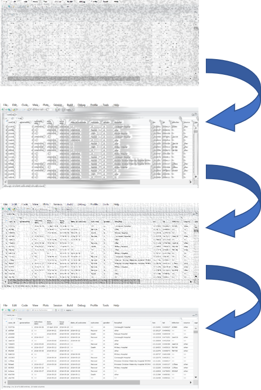

8 Làm sạch số liệu và các hàm quan trọng

Chương này trình bày các bước phổ biến được sử dụng trong quá trình “làm sạch” bộ dữ liệu và cũng giải thích việc sử dụng các hàm quản lý dữ liệu thiết yếu trong R.
Để giải thích rõ hơn quá trình làm sạch dữ liệu, chương này bắt đầu từ cách nhập bộ dữ liệu thô có tên linelist và tiến hành từng bước trong quá trình làm sạch. Trong code R, quy trình này được biểu thị dưới dạng một chuỗi “pipe”, tham chiếu đến toán tử “pipe” %>% để chuyển tiếp từ thao tác này sang thao tác tiếp theo trong cùng một bộ dữ liệu.
Các hàm quan trọng
Cuốn sách này nhấn mạnh việc sử dụng các hàm từ hệ sinh thái của package tidyverse. Các hàm thiết yếu trong R trình bày trong chương này được liệt kê dưới đây.
Nhiều hàm thuộc về package dplyr, mà cung cấp các hàm dạng “verb” để giải quyết các thách thức trong thao tác xử lý dữ liệu (tên package được viết đầy đủ là “data frame-plier. dplyr là một phần trong hệ sinh thái của package tidyverse (mà bao gồm các package khác như ggplot2, tidyr, stringr, tibble, purrr, magrittr, và forcats).
| Hàm | Chức năng | Package |
|---|---|---|
%>% |
“pipe” (chuyển tiếp) dữ liệu từ một hàm sang hàm tiếp theo | magrittr |
mutate() |
tạo, chuyển dạng, và định nghĩa lại cột | dplyr |
select() |
giữ lại, xóa, chọn, hoặc đổi tên cột | dplyr |
rename() |
đổi tên cột | dplyr |
clean_names() |
chuẩn hóa cú pháp tên cột | janitor |
as.character(), as.numeric(), as.Date(), etc. |
chuyển đổi định dạng cột | base R |
across() |
biến đổi đồng thời nhiều cột | dplyr |
| các hàm tidyselect | sử dụng logic để chọn cột | tidyselect |
filter() |
giữ lại các dòng theo điều kiện | dplyr |
distinct() |
lọc quan sát trùng | dplyr |
rowwise() |
xử lý theo/trong mỗi dòng | dplyr |
add_row() |
thêm dòng thủ công | tibble |
arrange() |
săp xếp dòng | dplyr |
recode() |
recode lại giá trị trong cột | dplyr |
case_when() |
recode lại giá trị trong cột kèm các điều kiện phức tạp | dplyr |
replace_na(), na_if(), coalesce() |
các hàm đặc biệt để recode | tidyr |
age_categories() and cut() |
tạo biến phân nhóm từ biến định lượng | epikit và base R |
match_df() |
recode/làm sạch giá trị sử dụng từ điển dữ liệu | matchmaker |
which() |
áp dụng các điều kiện logic; trả về các chỉ số | base R |
Nếu bạn muốn xem các hàm này so sánh với các câu lệnh trong Stata hoặc SAS, hãy xem chương Chuyển đổi sang R.
Bạn cũng có thể gặp một framework quản lý dữ liệu khác từ package data.table trong R với các toán tử như := và thường xuyên sử dụng dấu ngoặc [ ]. Cách tiếp cận và cú pháp này được giải thích ngắn gọn trong chương Data Table.
Thuật ngữ
Trong cuốn sách này, chúng tôi quy ước chung “cột” và “hàng” thay cho “biến” và “quan sát”. Như đã giải thích trong phần dẫn trên “dữ liệu gọn gàng - tidy data”, hầu hết các bộ dữ liệu dịch tễ-thống kê đều có cấu trúc gồm các hàng, cột và giá trị.
Variables (biến) chứa các giá trị đo lường cùng một thuộc tính cơ bản (như nhóm tuổi, kết quả hoặc ngày bắt đầu). Observations (quan sát) chứa tất cả các giá trị được đo trên cùng một đơn vị (ví dụ: một người, địa điểm hoặc mẫu phòng thí nghiệm). Vì vậy, những khía cạnh này có thể khó xác định một cách hữu hình hơn.
Trong bộ dữ liệu “tidy”, mỗi cột là một biến, mỗi hàng là một quan sát và mỗi ô là một giá trị duy nhất. Tuy nhiên, một số bộ dữ liệu bạn gặp phải sẽ không giống với mô tả này - bộ dữ liệu định dạng “wide (ngang)” có thể có một biến số được chia thành nhiều cột (xem ví dụ trong chương Xoay trục dữ liệu). Tương tự như vậy, các quan sát có thể được chia thành nhiều hàng.
Cuốn sách này tập trung về quản lý và biến đổi dữ liệu, do đó, việc đề cập đến cấu trúc dữ liệu cụ thể của các hàng và cột sẽ thích hợp hơn là các quan sát và biến vốn khá trừu tượng. Các trường hợp ngoại lệ chủ yếu xảy ra trong các chương về phân tích dữ liệu, nơi bạn sẽ thấy nhiều tham chiếu hơn đến các biến và quan sát.
8.1 Quy trình làm sạch
Chương này tiến hành các bước làm sạch điển hình, bằng cách thêm chúng tuần tự vào một chuỗi pipe.
Trong phân tích dịch tễ học và xử lý dữ liệu, các bước làm sạch thường được thực hiện tuần tự, liên kết với nhau. Trong R, việc này thường được thực hiện dưới dạng một “pipeline - đường ống” làm sạch, trong đó bộ dữ liệu thô được chuyển tiếp hoặc “dẫn” từ bước làm sạch này sang bước làm sạch khác.
Các chuỗi như vậy sử dụng các hàm dạng “verb” trong package dplyr và toán tử pipe %>% trong package magrittr. Chuỗi pipe bắt đầu từ dữ liệu “thô” (“linelist_raw.xlsx”) và kết thúc bằng bộ dữ liệu “sạch” trên R (linelist) có thể được sử dụng, lưu, xuất, v.v.
Trong quy trình làm sạch dữ liệu, thứ tự của các bước là quan trọng. Các bước làm sạch có thể bao gồm:
- Nhập dữ liệu
- Làm sạch hoặc đổi tên cột
- Loại bỏ trùng lặp
- Tạo và chuyển đổi cột (ví dụ: mã hóa lại hoặc chuẩn hóa các giá trị)
- Lọc hoặc thêm hàng
8.2 Gọi package
Đoạn code này trình bày cách gọi các package cần thiết cho phân tích. Trong cuốn sách này, chúng tôi nhấn mạnh đến hàm p_load() từ package pacman, cài đặt package nếu cần và gọi package ra để sử dụng. Bạn cũng có thể gọi các package đã cài đặt với hàm library() sẵn có trong base R. Xem chương R cơ bản để biết thêm thông tin về các package trong R.
8.3 Nhập dữ liệu
Nhập
Ở đây, chúng ta sẽ nhập tệp tin Excel “thô” bằng cách sử dụng hàm import() từ package rio. Package rio có thể xử lý linh hoạt nhiều loại tệp tin (ví dụ: .xlsx, .csv, .tsv, .rds. Xem chương về Nhập xuất dữ liệu để biết thêm thông tin và mẹo về các tình huống bất thường (ví dụ: loại bỏ hàng, thiết lập giá trị trống, nạp trang tính Google, v.v.).
Nếu bạn muốn hiểu rõ hơn, hãy tải xuống tệp dữ liệu linelist “thô” (với file dạng .xlsx).
Nếu bộ dữ liệu của bạn quá lớn và mất nhiều thời gian để nhập, sẽ hữu ích khi bạn đặt lệnh nhập dữ liệu riêng biệt với chuỗi pipe và dữ liệu “thô” sẽ được lưu thành một tệp riêng biệt. Điều này cũng cho phép dễ dàng so sánh giữa phiên bản gốc và phiên bản đã làm sạch.
Dưới đây, chúng ta nạp một tệp Excel thô và lưu nó dưới dạng dataframe linelist_raw. Chúng tôi giả định rằng tệp này nằm trong thư mục làm việc của bạn hoặc thư mục gốc của dự án R và vì vậy không có thư mục con nào được chỉ định trong đường dẫn tệp.
Bạn có thể xem 50 hàng đầu tiên của bộ dữ liệu bên dưới. Lưu ý: hàm head(n) trong base R cho phép bạn chỉ xem n hàng đầu tiên trong R console.
Đánh giá
Bạn có thể sử dụng hàm skim() từ package skimr để có cái nhìn tổng quan về toàn bộ bộ dữ liệu (xem chương Bảng mô tả để biết thêm thông tin). Các cột được tóm tắt theo phân lớp/định dạng như ký tự và số. Lưu ý: “POSIXct” là một loại phân lớp ngày thô (xem chương Làm việc với ngày tháng.
| Name | linelist_raw |
| Number of rows | 6611 |
| Number of columns | 28 |
| _______________________ | |
| Column type frequency: | |
| character | 17 |
| numeric | 8 |
| POSIXct | 3 |
| ________________________ | |
| Group variables | None |
Variable type: character
| skim_variable | n_missing | complete_rate | min | max | empty | n_unique | whitespace |
|---|---|---|---|---|---|---|---|
| case_id | 137 | 0.98 | 6 | 6 | 0 | 5888 | 0 |
| date onset | 293 | 0.96 | 10 | 10 | 0 | 580 | 0 |
| outcome | 1500 | 0.77 | 5 | 7 | 0 | 2 | 0 |
| gender | 324 | 0.95 | 1 | 1 | 0 | 2 | 0 |
| hospital | 1512 | 0.77 | 5 | 36 | 0 | 13 | 0 |
| infector | 2323 | 0.65 | 6 | 6 | 0 | 2697 | 0 |
| source | 2323 | 0.65 | 5 | 7 | 0 | 2 | 0 |
| age | 107 | 0.98 | 1 | 2 | 0 | 75 | 0 |
| age_unit | 7 | 1.00 | 5 | 6 | 0 | 2 | 0 |
| fever | 258 | 0.96 | 2 | 3 | 0 | 2 | 0 |
| chills | 258 | 0.96 | 2 | 3 | 0 | 2 | 0 |
| cough | 258 | 0.96 | 2 | 3 | 0 | 2 | 0 |
| aches | 258 | 0.96 | 2 | 3 | 0 | 2 | 0 |
| vomit | 258 | 0.96 | 2 | 3 | 0 | 2 | 0 |
| time_admission | 844 | 0.87 | 5 | 5 | 0 | 1091 | 0 |
| merged_header | 0 | 1.00 | 1 | 1 | 0 | 1 | 0 |
| …28 | 0 | 1.00 | 1 | 1 | 0 | 1 | 0 |
Variable type: numeric
| skim_variable | n_missing | complete_rate | mean | sd | p0 | p25 | p50 | p75 | p100 |
|---|---|---|---|---|---|---|---|---|---|
| generation | 7 | 1.00 | 16.60 | 5.71 | 0.00 | 13.00 | 16.00 | 20.00 | 37.00 |
| lon | 7 | 1.00 | -13.23 | 0.02 | -13.27 | -13.25 | -13.23 | -13.22 | -13.21 |
| lat | 7 | 1.00 | 8.47 | 0.01 | 8.45 | 8.46 | 8.47 | 8.48 | 8.49 |
| row_num | 0 | 1.00 | 3240.91 | 1857.83 | 1.00 | 1647.50 | 3241.00 | 4836.50 | 6481.00 |
| wt_kg | 7 | 1.00 | 52.69 | 18.59 | -11.00 | 41.00 | 54.00 | 66.00 | 111.00 |
| ht_cm | 7 | 1.00 | 125.25 | 49.57 | 4.00 | 91.00 | 130.00 | 159.00 | 295.00 |
| ct_blood | 7 | 1.00 | 21.26 | 1.67 | 16.00 | 20.00 | 22.00 | 22.00 | 26.00 |
| temp | 158 | 0.98 | 38.60 | 0.95 | 35.20 | 38.30 | 38.80 | 39.20 | 40.80 |
Variable type: POSIXct
| skim_variable | n_missing | complete_rate | min | max | median | n_unique |
|---|---|---|---|---|---|---|
| infection date | 2322 | 0.65 | 2012-04-09 | 2015-04-27 | 2014-10-04 | 538 |
| hosp date | 7 | 1.00 | 2012-04-20 | 2015-04-30 | 2014-10-15 | 570 |
| date_of_outcome | 1068 | 0.84 | 2012-05-14 | 2015-06-04 | 2014-10-26 | 575 |
8.4 Tên cột
Trong R, tên cột là “tiêu đề” hoặc giá trị “trên đỉnh” của một cột. Chúng được sử dụng để tham chiếu đến các cột trong đoạn code và đóng vai trò như một nhãn mặc định trong các bảng biểu.
Các phần mềm thống kê khác như SAS và STATA sử dụng “nhãn” là tên cột phiên bản dài hơn khi in, cùng tồn tại song song với tên cột. Mặc dù R cung cấp tính năng thêm nhãn của cột vào dữ liệu, nhưng điều này hầu hết không được nhấn mạnh trong thực tế. Để đặt tên cột “dễ nhìn” cho các bảng biểu, người ta thường điều chỉnh hiển thị của chúng trong các lệnh vẽ biểu đồ để tạo ra kết quả (ví dụ: tiêu đề trục hoặc chú giải của một biểu đồ hoặc tiêu đề cột trong bảng - xem thêm mục scales trong chương Các tips với ggplot và chương Trình bày bảng). Nếu bạn muốn gán nhãn cột trong dữ liệu, hãy đọc thêm tài liệu trực tuyến tại đây và tại đây.
Vì tên cột trong R được sử dụng rất thường xuyên, vì vậy chúng phải có cú pháp “sạch”. Chúng tôi đề xuất những tiêu chí sau:
- Tên ngắn
- Không có khoảng trắng (thay thế bằng dấu gạch dưới_)
- Không có ký tự lạ (&, #, <, >, …)
- Thống nhất cách định danh (vd: toàn bộ tên cột ngày như date_onset, date_report, date_death…)
Tên các cột trong linelist_raw được in bên dưới bằng cách sử dụng hàm names() từ base R. Ban đầu chúng ta có thể thấy rằng:
- Một số tên chứa khoảng trắng (vd:
infection date) - Một số mẫu tên khác nhau được sử dụng cho biến ngày (
date onsetvàinfection date) - Phải có một tiêu đề được hợp nhất ở hai cột cuối cùng trong tệp .xlsx. Chúng tôi biết điều này vì tên của hai cột được hợp nhất (“merge_header”) được R gán cho cột đầu tiên và cột thứ hai được gán tên giữ chỗ “… 28” (vì lúc đó nó trống và là cột thứ 28).
## [1] "case_id" "generation" "infection date" "date onset"
## [5] "hosp date" "date_of_outcome" "outcome" "gender"
## [9] "hospital" "lon" "lat" "infector"
## [13] "source" "age" "age_unit" "row_num"
## [17] "wt_kg" "ht_cm" "ct_blood" "fever"
## [21] "chills" "cough" "aches" "vomit"
## [25] "temp" "time_admission" "merged_header" "...28"CHÚ Ý: Để tham chiếu tên một cột có chứa khoảng trắng, hãy bao quanh tên cột bằng dấu huyền, ví dụ: linelist$` '\x60infection date\x60'`. Lưu ý là trên bàn phím, dấu huyền (`) được phân biệt với dấu ngoặc đơn (’).
Làm sạch tự động
Hàm clean_names() từ package janitor chuẩn hóa tên cột và biến chúng thành duy nhất bằng cách thực hiện như sau:
- Chuyển đổi tất cả các tên cột thành chỉ bao gồm dấu gạch dưới, số và chữ cái
- Các ký tự có dấu được chuyển ngữ sang dạng ASCII (ví dụ: o tiếng Đức với âm sắc trở thành “o”, “enye” tiếng Tây Ban Nha trở thành “n”)
- Tùy chọn viết hoa cho tên cột mới có thể được chỉ định bằng cách sử dụng đối số
case =(mặc định là “snake”, các lựa chọn thay thế bao gồm “sentence”, “title”, “small_camel”…) - Bạn có thể chỉ định các tên thay thế cụ thể bằng cách cung cấp một vectơ tới đố số
replace =(ví dụ:replace = c(onset = "date_of_onset")) - Đây là một hướng dẫn trực tuyến
Sau đây, quy trình làm sạch bắt đầu bằng cách sử dụng hàm clean_names() trên bộ dữ liệu linelist thô.
# pipe the raw dataset through the function clean_names(), assign result as "linelist"
linelist <- linelist_raw %>%
janitor::clean_names()
# see the new column names
names(linelist)## [1] "case_id" "generation" "infection_date" "date_onset"
## [5] "hosp_date" "date_of_outcome" "outcome" "gender"
## [9] "hospital" "lon" "lat" "infector"
## [13] "source" "age" "age_unit" "row_num"
## [17] "wt_kg" "ht_cm" "ct_blood" "fever"
## [21] "chills" "cough" "aches" "vomit"
## [25] "temp" "time_admission" "merged_header" "x28"LƯU Ý: Tên cột cuối cùng “… 28” đã được đổi thành “x28”.
Làm sạch tên cột thủ công
Việc đặt tên lại các cột theo cách thủ công thường là cần thiết, ngay cả sau bước chuẩn hóa ở trên. Dưới đây, việc đổi tên được thực hiện bằng cách sử dụng hàm rename() từ package dplyr, như một phần của quy trình. rename() sử dụng cú pháp NEW = OLD - tên cột mới được đặt trước tên cột cũ.
Dưới đây, một lệnh đổi tên được thêm vào quy trình làm sạch. Các khoảng trắng đã được thêm vào một cách chọn lọc để căn chỉnh code dễ đọc hơn.
# CLEANING 'PIPE' CHAIN (starts with raw data and pipes it through cleaning steps)
##################################################################################
linelist <- linelist_raw %>%
# standardize column name syntax
janitor::clean_names() %>%
# manually re-name columns
# NEW name # OLD name
rename(date_infection = infection_date,
date_hospitalisation = hosp_date,
date_outcome = date_of_outcome)Bây giờ bạn có thể thấy rằng tên các cột đã được thay đổi:
## [1] "case_id" "generation" "date_infection"
## [4] "date_onset" "date_hospitalisation" "date_outcome"
## [7] "outcome" "gender" "hospital"
## [10] "lon" "lat" "infector"
## [13] "source" "age" "age_unit"
## [16] "row_num" "wt_kg" "ht_cm"
## [19] "ct_blood" "fever" "chills"
## [22] "cough" "aches" "vomit"
## [25] "temp" "time_admission" "merged_header"
## [28] "x28"Thay đối tên cột theo vị trí
Bạn cũng có thể đổi tên theo vị trí cột, thay vì tên cột, ví dụ:
Đổi tên bằng hàm select() và summarise()
Như một lối tắt, bạn cũng có thể đổi tên các cột bằng hàm select() và summarise() thuộc package dplyr. Hàm select() được sử dụng để chỉ giữ một số cột nhất định (sẽ được đề cập sau trong chương này). Hàm summarise() được đề cập trong các chương Nhóm dữ liệu và Bảng mô tả. Các hàm này cũng sử dụng định dạng new_name = old_name. Đây là một ví dụ:
Các thách thức khác
Cột trống tên trên file Excel
R không thể nhận diện các cột trong bộ dữ liệu mà không có tên cột (tiêu đề). Vì vậy, nếu bạn nhập một bộ dữ liệu Excel có dữ liệu nhưng không có tiêu đề cột, R sẽ điền vào các tiêu đề đó mặc định như “… 1” hoặc “… 2”. Phần số đại diện cho số cột (ví dụ: nếu cột thứ 4 trong bộ dữ liệu không có tiêu đề, thì R sẽ mặc định đặt tên là “… 4”).
Bạn có thể làm sạch các tên cột này theo cách thủ công bằng cách tham chiếu số vị trí của chúng (xem ví dụ ở trên) hoặc tên được chỉ định của chúng (linelist_raw$...1).
Hợp nhất tên cột và ô Excel
Các ô được hợp nhất trong file Excel là một sự cố thường xảy ra khi nhận dữ liệu. Như đã giải thích trong chương Chuyển đổi sang R, các ô được hợp nhất có thể dễ nhìn cho con người đọc dữ liệu, nhưng không phải là “cấu trúc dữ liệu cơ bản” và gây ra nhiều vấn đề cho máy khi nhận diện dữ liệu. R không thể chứa các ô đã hợp nhất.
Nhắc nhở người nhập liệu rằng dữ liệu có thể đọc được bởi con người không giống với dữ liệu mà máy có thể đọc được. Hãy cố gắng đào tạo người dùng về các nguyên tắc về dữ liệu tidy. Nếu có thể, hãy cố gắng thay đổi quy trình để dữ liệu có định dạng gọn gàng hơn mà không hợp nhất các ô.
- Mỗi biến phải là một cột riêng biệt
- Mỗi quan sát phải là một dòng riêng biệt
- Mỗi giá trị phải là một ô riêng biệt
Khi sử dụng hàm import() của package rio, giá trị trong một ô đã hợp nhất sẽ được gán cho ô đầu tiên và các ô tiếp theo sẽ trống.
Một giải pháp để xử lý các ô đã hợp nhất là nạp dữ liệu bằng hàm readWorkbook() từ package openxlsx. Thiết lập đối số fillMergedCells = TRUE. Điều này cho phép giá trị trong ô hợp nhất được tham chiếu cho tất cả các ô nằm trong phạm vi hợp nhất.
NGUY HIỂM: Nếu các tên cột được hợp nhất với readWorkbook(), có thể sẽ trả về tên cột trùng lặp, mà bạn sẽ cần phải sửa một cách thủ công - R không làm việc được với các tên cột trùng lặp! Bạn có thể đặt lại tên cho chúng bằng cách tham chiếu vị trí của chúng (ví dụ: cột 5), như được giải thích trong mục làm sạch tên cột thủ công.
8.5 Chọn hoặc đổi vị trí cột
Sử dụng hàm select() từ package dplyr để chọn các cột bạn muốn giữ lại và sắp xếp lại thứ tự của chúng trong bộ dữ liệu.
CẨN TRỌNG: Trong các ví dụ dưới đây, bộ dữ liệu linelist được điều chỉnh với hàm select() và được hiển thị, nhưng không được lưu. Việc này được sử dụng phục vụ mục đích mô tả. Tên cột đã sửa đổi được in ra bằng cách chuyển tiếp bộ dữ liệu tới hàm names().
Dưới đây là TẤT CẢ các tên cột trong bộ dữ liệu linelist tại thời điểm làm sạch:
## [1] "case_id" "generation" "date_infection"
## [4] "date_onset" "date_hospitalisation" "date_outcome"
## [7] "outcome" "gender" "hospital"
## [10] "lon" "lat" "infector"
## [13] "source" "age" "age_unit"
## [16] "row_num" "wt_kg" "ht_cm"
## [19] "ct_blood" "fever" "chills"
## [22] "cough" "aches" "vomit"
## [25] "temp" "time_admission" "merged_header"
## [28] "x28"Giữ cột
Giữ lại những cột mong muốn
Viết tên cột cần giữ trong hàm select(), không có dấu ngoặc kép. Kết quả trả về sẽ xuất hiện trong bộ dữ liệu theo thứ tự mà bạn cung cấp. Lưu ý rằng nếu bạn chỉ định một cột không tồn tại, R sẽ báo lỗi (xem cách sử dụng hàm any_of() bên dưới nếu bạn không muốn gặp lỗi trong trường hợp này).
# linelist dataset is piped through select() command, and names() prints just the column names
linelist %>%
select(case_id, date_onset, date_hospitalisation, fever) %>%
names() # display the column names## [1] "case_id" "date_onset" "date_hospitalisation"
## [4] "fever"Hàm trợ giúp “tidyselect”
Các hàm trợ giúp này được xây dựng để giúp bạn dễ dàng chỉ định các cột cần giữ, loại bỏ hoặc chuyển đổi. Chúng nằm trong package tidyselect, thuộc hệ sinh thái tidyverse và làm cơ sở cho cách chọn cột trong các hàm dplyr.
Ví dụ: nếu bạn muốn sắp xếp lại các cột, hàm everything() là một hàm hữu ích để biểu thị “tất cả các cột khác chưa được đề cập”. Lệnh dưới đây di chuyển các cột date_onset và date_hospitalisation lên cột đầu tiên (bên trái) của bộ dữ liệu, nhưng vẫn giữ tất cả các cột khác sau đó. Lưu ý rằng hàm everything() được viết bằng dấu ngoặc đơn trống:
# move date_onset and date_hospitalisation to beginning
linelist %>%
select(date_onset, date_hospitalisation, everything()) %>%
names()## [1] "date_onset" "date_hospitalisation" "case_id"
## [4] "generation" "date_infection" "date_outcome"
## [7] "outcome" "gender" "hospital"
## [10] "lon" "lat" "infector"
## [13] "source" "age" "age_unit"
## [16] "row_num" "wt_kg" "ht_cm"
## [19] "ct_blood" "fever" "chills"
## [22] "cough" "aches" "vomit"
## [25] "temp" "time_admission" "merged_header"
## [28] "x28"Dưới đây là các hàm trợ giúp “tidyselect” khác cũng hoạt động trong các hàm dplyr như select(), across(), và summarise():
everything()- tất cả các cột khác chưa được đề cậplast_col()- cột cuối cùngwhere()- áp dụng một hàm cho tất cả các cột và chọn những cột trả về giá trị TRUEcontains()- cột chứa một chuỗi ký tự- Ví dụ:
select(contains("time"))
- Ví dụ:
starts_with()- khớp với các tiền tố được chỉ định- Ví dụ:
select(starts_with("date_"))
- Ví dụ:
ends_with()- khớp với các hậu tố được chỉ định- Ví dụ:
select(ends_with("_post"))
- Ví dụ:
matches()- để áp dụng một mệnh đề chính quy (regex)- Ví dụ:
select(matches("[pt]al"))
- Ví dụ:
num_range()- một khoảng số học như x01, x02, x03any_of()- khớp NẾU cột tồn tại nhưng không báo lỗi nếu không tìm thấy- Ví dụ:
select(any_of(date_onset, date_death, cardiac_arrest))
- Ví dụ:
Ngoài ra, sử dụng các toán tử bình thường như c() để liệt kê danh sách cột, hoặc : cho các cột liên tiếp, ! cho đối lập, & cho VÀ, và | cho HOẶC.
Sử dụng where() để cụ thể tiêu chí logic cho các cột. Nếu đưa một hàm vào trong where(), hãy nhớ không bao gồm dấu ngoặc đơn trống của hàm đó. Câu lệnh bên dưới chọn các cột kiểu Số.
## [1] "generation" "lon" "lat" "row_num" "wt_kg" "ht_cm"
## [7] "ct_blood" "temp"Sử dụng contains() để chọn các cột trong đó tên cột chứa một chuỗi ký tự được chỉ định. ends_with() và starts_with() cung cấp thêm các lựa chọn khác nhau.
## [1] "date_infection" "date_onset" "date_hospitalisation"
## [4] "date_outcome"Hàm matches() hoạt động tương tự như hàm contains() nhưng có thể được cung cấp một biểu thức chính quy (xem chương Ký tự và chuỗi), chẳng hạn như nhiều chuỗi được phân tách bằng toán tự OR trong dấu ngoặc đơn:
# searched for multiple character matches
linelist %>%
select(matches("onset|hosp|fev")) %>% # note the OR symbol "|"
names()## [1] "date_onset" "date_hospitalisation" "hospital"
## [4] "fever"CẨN TRỌNG: Nếu tên cột mà bạn đưa ra không tồn tại trong dữ liệu, máy có thể báo lỗi và dừng code của bạn. Cân nhắc sử dụng hàm any_of() để trích dẫn các cột có thể hoặc không thể tồn tại, đặc biệt hữu ích trong các lựa chọn loại trừ (loại bỏ).
Chỉ có một trong các cột này tồn tại, nhưng không có lỗi được báo và code sẽ tiếp tục các bước trong quy trình làm sạch.
linelist %>%
select(any_of(c("date_onset", "village_origin", "village_detection", "village_residence", "village_travel"))) %>%
names()## [1] "date_onset"Xóa cột
Chỉ ra cột nào cần loại bỏ bằng cách đặt biểu tượng dấu trừ “-” ở phía trước tên cột (ví dụ: select(-outcome)) hoặc một vectơ tên các cột (như bên dưới). Tất cả các cột khác sẽ được giữ nguyên.
linelist %>%
select(-c(date_onset, fever:vomit)) %>% # remove date_onset and all columns from fever to vomit
names()## [1] "case_id" "generation" "date_infection"
## [4] "date_hospitalisation" "date_outcome" "outcome"
## [7] "gender" "hospital" "lon"
## [10] "lat" "infector" "source"
## [13] "age" "age_unit" "row_num"
## [16] "wt_kg" "ht_cm" "ct_blood"
## [19] "temp" "time_admission" "merged_header"
## [22] "x28"Bạn cũng có thể xóa một cột bằng cú pháp trong base R, bằng cách định nghĩa nó là NULL. Ví dụ:
Hoạt động độc lập
select() cũng có thể được sử dụng như một lệnh độc lập (không bắt buộc trong chuỗi các bước làm sạch). Trong trường hợp này, đối số đầu tiên trong bộ dữ liệu gốc sẽ được tham chiếu.
# Create a new linelist with id and age-related columns
linelist_age <- select(linelist, case_id, contains("age"))
# display the column names
names(linelist_age)## [1] "case_id" "age" "age_unit"Thêm vào quy trình làm sạch
Trong bộ dữ liệu linelist_raw, có một vài cột chúng ta không cần: row_num, merged_header, và x28. Chúng ta xóa chúng bằng lệnh select() trong chuỗi các bước làm sạch như sau:
# CLEANING 'PIPE' CHAIN (starts with raw data and pipes it through cleaning steps)
##################################################################################
# begin cleaning pipe chain
###########################
linelist <- linelist_raw %>%
# standardize column name syntax
janitor::clean_names() %>%
# manually re-name columns
# NEW name # OLD name
rename(date_infection = infection_date,
date_hospitalisation = hosp_date,
date_outcome = date_of_outcome) %>%
# ABOVE ARE UPSTREAM CLEANING STEPS ALREADY DISCUSSED
#####################################################
# remove column
select(-c(row_num, merged_header, x28))8.6 Loại bỏ trùng lặp
Xem chương Loại bỏ trùng lặp để biết các tùy chọn mở rộng về cách loại bỏ dữ liệu trùng lặp. Chỉ một ví dụ rất đơn giản về cách loại bỏ hàng trùng lặp được trình bày ở chương này.
Package dplyr cung cấp hàm distinct(). Hàm này kiểm tra tất cả các hàng và rút gọn bộ dữ liệu cho chỉ còn các hàng là duy nhất. Nghĩa là, nó loại bỏ 100% các hàng trùng lặp.
Khi đánh giá các hàng trùng lặp, hàm này sẽ thực hiện trên các cột được chỉ định - mặc định nó sẽ xem xét tất cả các cột. Như trình bày trong chương loại bỏ trùng lặp, bạn có thể điều chỉnh phạm vi cột để việc khảo sát tính duy nhất của các hàng sẽ chỉ được đánh giá trong phạm vi một số cột nhất định.
Trong ví dụ đơn giản này, chúng ta chỉ cần thêm câu lệnh trống distinct() vào chuỗi các bước làm sạch. Điều này đảm bảo không có hàng nào là bản sao 100% của các hàng khác (được đánh giá trên tất cả các cột).
Chúng ta bắt đầu với nrow(linelist) hàng trong bộ linelist.
Sau khi loại bỏ trùng lặp, thì bộ dữ liệu mới có nrow(linelist) hàng. Bất kỳ hàng nào bị xóa cũng có thể là 100% bản sao của các hàng khác.
Dưới đây, lệnh distinct() được thêm vào quy trình làm sạch:
# CLEANING 'PIPE' CHAIN (starts with raw data and pipes it through cleaning steps)
##################################################################################
# begin cleaning pipe chain
###########################
linelist <- linelist_raw %>%
# standardize column name syntax
janitor::clean_names() %>%
# manually re-name columns
# NEW name # OLD name
rename(date_infection = infection_date,
date_hospitalisation = hosp_date,
date_outcome = date_of_outcome) %>%
# remove column
select(-c(row_num, merged_header, x28)) %>%
# ABOVE ARE UPSTREAM CLEANING STEPS ALREADY DISCUSSED
#####################################################
# de-duplicate
distinct()8.7 Tạo và biến đổi cột
Chúng tôi khuyến khích sử dụng hàm mutate() trong package dplyr để thêm một cột mới hoặc để sửa đổi một cột sẵn có.
Dưới đây là một ví dụ về tạo cột mới với hàm mutate(). Cú pháp là: mutate(new_column_name = value or transformation)
Trong Stata, điều này tương tự như lệnh generate, nhưng hàm mutate() trong R còn có thể được sử dụng để điều chỉnh cột đã tồn tại.
Tạo cột mới
Tính năng cơ bản nhất của hàm mutate() là để tạo một cột mới, có thể thấy trong ví dụ dưới đây. Nó tạo một cột mới new_col trong đó giá trị trong mỗi hàng đều là 10.
Bạn cũng có thể tham chiếu các giá trị trong các cột khác, để thực hiện phép tính toán. Dưới đây, cột mới bmi được tạo để tính chỉ số khối cơ thể (BMI) cho mỗi trường hợp - như được tính bằng công thức BMI = kg/m^2, sử dụng cột ht_cm và cột wt_kg.
Nếu tạo nhiều cột mới, hãy tách riêng từng cột bằng dấu phẩy và dòng mới. Dưới đây là các ví dụ về tạo các cột mới, bao gồm một cột mà chứa các giá trị từ các cột khác được kết hợp bằng hàm str_glue() từ package stringr (xem chương Ký tự và chuỗi).
new_col_demo <- linelist %>%
mutate(
new_var_dup = case_id, # new column = duplicate/copy another existing column
new_var_static = 7, # new column = all values the same
new_var_static = new_var_static + 5, # you can overwrite a column, and it can be a calculation using other variables
new_var_paste = stringr::str_glue("{hospital} on ({date_hospitalisation})") # new column = pasting together values from other columns
) %>%
select(case_id, hospital, date_hospitalisation, contains("new")) # show only new columns, for demonstration purposesKiểm tra các cột mới. Đối với mục tiêu minh họa, chỉ các cột mới và các cột được sử dụng để tạo cột mới được hiển thị:
MẸO: Một biến thể của hàm mutate() là hàm transmute(). Hàm này thêm một cột mới giống như mutate(), nhưng cũng bỏ/xóa tất cả các cột khác mà bạn không đề cập trong dấu ngoặc đơn của hàm.
Chuyển đổi kiểu dữ liệu của cột
Các cột chứa giá trị là ngày tháng, số hoặc giá trị logic (TRUE/FALSE) sẽ chỉ hoạt động như mong đợi nếu chúng được phân loại chính xác. Có sự khác biệt giữa “2” của phân lớp ký tự và 2 của phân lớp số!
Có nhiều cách để thiết lập kiểu dữ liệu cho cột trong các lệnh nhập, nhưng chúng thường phức tạp. Xem chương R cơ bản về các lớp đối tượng để tìm hiểu thêm về cách chuyển đổi phân lớp đối tượng và cột.
Đầu tiên, hãy kiểm tra các cột quan trọng để xem chúng đã đúng định dạng chính xác chưa. Chúng ta có thể phát hiện điều này ngay từ khi chúng ta chạy lệnh skim().
Hiện tại, kiểu của cột age là dạng ký tự. Để thực hiện các phân tích định lượng, chúng ta cần những giá trị số này được nhận biết là dạng số!
## [1] "character"Phân lớp của cột date_onset cũng là ký tự! Để thực hiện phân tích, những cột ngày này phải được nhận biết là dạng ngày tháng!
## [1] "character"Để giải quyết vấn đề này, hãy sử dụng hàm mutate() để định dạng và chuyển đổi lại một cột. Chúng ta giữ nguyên cột đó và định dạng lại sang một phân lớp khác. Sau đây là một ví dụ cơ bản, chuyển đổi hoặc đảm bảo rằng cột age là phân lớp dạng số:
Theo cách tương tự, bạn có thể sử dụng hàm as.character() và hàm as.logical(). Để chuyển đổi sang kiểu Factor, bạn có thể sử dụng hàm factor() từ base R hoặc hàm as_factor() từ package forcats. Đọc thêm ở chương Factors.
Bạn phải cẩn thận khi chuyển đổi sang phân lớp Ngày. Một số phương pháp được giải thích rõ hơn ở chương Làm việc với ngày tháng. Thông thường, tất cả các giá trị ngày ban đầu phải ở cùng một định dạng cần chuyển đổi để có thể sử dụng (ví dụ: “MM/DD/YYYY” hoặc “DD MM YYYY”). Sau khi chuyển đổi thành thành phân lớp Ngày, hãy kiểm tra dữ liệu của bạn để xác nhận rằng mỗi giá trị đã được chuyển đổi chính xác.
Dữ liệu được nhóm
Nếu bộ dữ liệu của bạn đã được nhóm (xem chương Nhóm dữ liệu), hàm mutate() có thể hoạt động khác so với khi bộ dữ liệu không được nhóm. Bất kỳ hàm tổng hợp nào, như mean(), median(), max(), v.v. sẽ tính theo nhóm, không phải theo tất cả các hàng.
# age normalized to mean of ALL rows
linelist %>%
mutate(age_norm = age / mean(age, na.rm=T))
# age normalized to mean of hospital group
linelist %>%
group_by(hospital) %>%
mutate(age_norm = age / mean(age, na.rm=T))Đọc thêm về cách sử dụng hàm mutate() trên các bộ dữ liệu được nhóm ở tài liệu về mutate trong package tidyverse.
Biến đổi nhiều cột
Thông thường, để viết mã ngắn gọn, bạn muốn áp dụng cùng một biến đổi trên nhiều cột cùng một lúc. Một cách biến đổi có thể được áp dụng trên nhiều cột cùng một lúc bằng cách sử dụng hàm across() từ package dplyr (cũng trong package tidyverse). Hàm across() có thể được sử dụng với bất kỳ hàm nào trong packe dplyr, nhưng thường được sử dụng với hàm select(), mutate(), filter(), hoặc summarise(). Xem cách sử dụng hàm summarise() trong chương Bảng mô tả.
Chỉ định các cột bằng đối số .cols = và các hàm được sử dụng bằng .fns =. Bất kỳ đối số bổ sung nào để cung cấp cho hàm .fns đều có thể được bao gồm sau dấu phẩy, vẫn nằm trong hàm across().
Lựa chọn cột với hàm across()
Chỉ định các cột tới đối số .cols =. Bạn có thể đặt tên cho chúng một cách riêng lẻ hoặc sử dụng các hàm trợ giúp “tidyselect”. Cụ thể hàm tới đối số .fns =. Lưu ý rằng cách sử dụng hàm được trình bày bên dưới, hàm được viết mà không có dấu ngoặc đơn ().
Ở đây, phép biến đổi as.character() được áp dụng cho tên cột cụ thể trong hàm across().
Các hàm trợ giúp “tidyselect” có sẵn để hỗ trợ bạn trong việc chỉ định các cột. Chúng được trình bày chi tiết ở trên trong mục Chọn và sắp xếp thứ tự cột, bao gồm: everything(), last_col(), where(), starts_with(), ends_with(), contains(), matches(), num_range() và any_of().
Đây là một ví dụ về cách thay đổi tất cả các cột thành phân lớp dạng ký tự:
#to change all columns to character class
linelist <- linelist %>%
mutate(across(.cols = everything(), .fns = as.character))Chuyển đổi tất cả các cột thành dạng ký tự có tên chứa chuỗi ký tự “date” (lưu ý vị trí của dấu phẩy và dấu ngoặc đơn):
#to change all columns to character class
linelist <- linelist %>%
mutate(across(.cols = contains("date"), .fns = as.character))Dưới đây, một ví dụ về việc thay đổi các cột hiện là phân lớp POSIXct (một kiểu dữ liệu ngày tháng thô hiển thị mốc thời gian) - hay nói cách khác, khi hàm is.POSIXct() đánh giá là TRUE. Sau đó, chúng ta muốn áp dụng hàm as.Date() cho các cột này để chuyển đổi chúng thành kiểu Ngày thông thường.
- Lưu ý rằng trong hàm
across(), chúng tôi cũng sử dụng hàmwhere()tương tự như hàmis.POSIXctđược đánh giá là TRUE hoặc FALSE.
- Lưu ý rằng hàm
is.POSIXct()là từ package lubridate. Các hàm “is” tương tự khác nhưis.character(),is.numeric(), vàis.logical()thì thuộc base R
Hàm across()
Bạn có thể đọc tài liệu với hàm ?across để biết chi tiết về cách sử dụng hàm across(). Một vài điểm tóm tắt: có một số cách để chỉ định (các) hàm để thực hiện trên một cột và bạn thậm chí có thể tự chỉ định các hàm riêng của mình:
Bạn có thể cung cấp tên hàm đứng một mình (ví dụ:
meanhoặcas.character)
Bạn có thể cung cấp hàm theo phong cách purrr (ví dụ:
~ mean(.x, na.rm = TRUE)) (xem chương Lặp, vòng lặp, và danh sách)
Bạn có thể chỉ định nhiều hàm bằng cách cung cấp danh sách (ví dụ:
list(mean = mean, n_miss = ~ sum(is.na(.x))).- Nếu bạn cung cấp nhiều hàm, nhiều cột được chuyển đổi sẽ được trả về dựa trên mỗi cột ban đầu, với các tên duy nhất theo định dạng
col_fn. Bạn có thể điều chỉnh cách đặt tên các cột mới với đối số.names =bằng cách sử dụng cú pháp glue (xem chương Ký tự và chuỗi) trong đó{.col}và{.fn}được viết tắt cho cột và hàm đầu vào.
- Nếu bạn cung cấp nhiều hàm, nhiều cột được chuyển đổi sẽ được trả về dựa trên mỗi cột ban đầu, với các tên duy nhất theo định dạng
Dưới đây là một số tài nguyên trực tuyến về cách sử dụng hàm across(): creator Hadley Wickham’s thoughts/rationale
Hàm coalesce()
Hàm dplyr này tìm giá trị không bị thiếu đầu tiên tại mỗi vị trí. Nó “điền vào” các giá trị còn thiếu với giá trị có sẵn đầu tiên theo thứ tự bạn chỉ định.
Đây là một ví dụ ngoài phạm vi của bộ dữ liệu: Giả sử bạn có hai vectơ, một vectơ chứa thông tin về làng nơi bệnh nhân được phát hiện và một vectơ chứa thông tin làng nơi bệnh nhân cư trú . Bạn có thể sử dụng hàm coalesce() để chọn giá trị không bị thiếu đầu tiên cho mỗi biến số:
village_detection <- c("a", "b", NA, NA)
village_residence <- c("a", "c", "a", "d")
village <- coalesce(village_detection, village_residence)
village # print## [1] "a" "b" "a" "d"Điều này hoạt động tương tự nếu bạn cung cấp các cột trong bộ dữ liệu: đối với mỗi hàng, hàm sẽ gán giá trị cột mới với giá trị không bị thiếu đầu tiên trong các cột bạn đã cung cấp (theo thứ tự được cung cấp).
Đây là một ví dụ về thao tác “theo hàng (row-wise)”. Để biết các phép tính theo hàng phức tạp hơn, hãy xem chương bên dưới về Tính toán theo hàng.
Toán lũy tích
Nếu bạn muốn một cột thể hiện tổng tích lũy/trung bình/tối thiểu/tối đa, v.v. như đánh giá các hàng của bộ dữ liệu cho đến thời điểm đó, hãy sử dụng các hàm sau:
cumsum() trả về tổng tích lũy, như được hiển thị bên dưới:
## [1] 31## [1] 2 6 21 31Điều này có thể được sử dụng trong bộ dữ liệu khi tạo một cột mới. Ví dụ: để tính toán số ca lũy tích mỗi ngày trong một đợt bùng dịch, hãy xem xét đoạn code như sau:
cumulative_case_counts <- linelist %>% # begin with case linelist
count(date_onset) %>% # count of rows per day, as column 'n'
mutate(cumulative_cases = cumsum(n)) # new column, of the cumulative sum at each rowDưới đây là 10 hàng đầu tiên:
## date_onset n cumulative_cases
## 1 2012-04-15 1 1
## 2 2012-05-05 1 2
## 3 2012-05-08 1 3
## 4 2012-05-31 1 4
## 5 2012-06-02 1 5
## 6 2012-06-07 1 6
## 7 2012-06-14 1 7
## 8 2012-06-21 1 8
## 9 2012-06-24 1 9
## 10 2012-06-25 1 10Xem chương Đường cong dịch bệnh để biết cách lập biểu đồ các trường hợp mới mắc tích lũy với epicurve.
Xem thêm:
cumsum(), cummean(), cummin(), cummax(), cumany(), cumall()
Sử dụng base R
Để định nghĩa một cột mới (hoặc tái định nghĩa lại một cột) bằng cách sử dụng base R, hãy viết tên của bộ dữ liệu, được liên kết với $, vào tên cột mới (hoặc cột được sửa đổi). Sử dụng toán tử gán <- để xác định (các) giá trị mới. Hãy nhớ rằng khi sử dụng base R, bạn phải chỉ định tên bộ dữ liệu trước tên cột (ví dụ: dataframe$column). Đây là một ví dụ về cách tạo cột bmi bằng cách sử dụng base R:
Thêm vào chuỗi pipe
Dưới đây, một cột mới được thêm vào chuỗi pipe và một số phân lớp được chuyển đổi.
# CLEANING 'PIPE' CHAIN (starts with raw data and pipes it through cleaning steps)
##################################################################################
# begin cleaning pipe chain
###########################
linelist <- linelist_raw %>%
# standardize column name syntax
janitor::clean_names() %>%
# manually re-name columns
# NEW name # OLD name
rename(date_infection = infection_date,
date_hospitalisation = hosp_date,
date_outcome = date_of_outcome) %>%
# remove column
select(-c(row_num, merged_header, x28)) %>%
# de-duplicate
distinct() %>%
# ABOVE ARE UPSTREAM CLEANING STEPS ALREADY DISCUSSED
###################################################
# add new column
mutate(bmi = wt_kg / (ht_cm/100)^2) %>%
# convert class of columns
mutate(across(contains("date"), as.Date),
generation = as.numeric(generation),
age = as.numeric(age)) 8.8 Mã hóa lại giá trị
Dưới đây là một số tình huống mà bạn cần mã hóa lại (thay đổi) các giá trị:
- để chỉnh sửa một giá trị cụ thể (ví dụ: một ngày có năm hoặc định dạng không chính xác)
- để hợp nhất các giá trị được viết sai chính tả
- để tạo một cột chứa giá trị phân loại mới
- để tạo một cột chứa danh mục số mới (ví dụ: danh mục độ tuổi)
Giá trị cụ thể
Để thay đổi các giá trị theo cách thủ công, bạn có thể sử dụng hàm recode() bên trong hàm mutate().
Hãy tưởng tượng có một ngày không bình thường trong dữ liệu (ví dụ: “2014-14-15”): bạn có thể sửa ngày theo cách thủ công trong dữ liệu thô hoặc, bạn có thể ghi thay đổi trong chuỗi các bước làm sạch thông qua mutate() và recode(). Cách thứ hai sẽ rõ ràng hơn và có thể được tái lập lại cho bất kỳ ai khác muốn hiểu hoặc lặp lại phân tích của bạn.
# fix incorrect values # old value # new value
linelist <- linelist %>%
mutate(date_onset = recode(date_onset, "2014-14-15" = "2014-04-15"))Dòng mutate() ở trên có thể được đọc là: “biến đổi cột date_onset bằng với cột date_onset sau khi được mã hóa lại để GIÁ TRỊ CŨ được đổi thành GIÁ TRỊ MỚI”. Lưu ý rằng cú pháp (CŨ = MỚI) này của hàm recode() ngược lại với hầu hết các cú pháp trong R (mới = cũ). Cộng đồng phát triển R đang làm việc để sửa đổi điều này.
Sau đây là một ví dụ khác về việc mã hóa lại nhiều giá trị trong một cột.
Trong bộ dữ liệu linelist, các giá trị trong cột “hospital” phải được làm sạch. Có một số cách viết khác nhau và nhiều giá trị bị thiếu.
##
## Central Hopital Central Hospital
## 11 457
## Hospital A Hospital B
## 290 289
## Military Hopital Military Hospital
## 32 798
## Mitylira Hopital Mitylira Hospital
## 1 79
## Other Port Hopital
## 907 48
## Port Hospital St. Mark's Maternity Hospital (SMMH)
## 1756 417
## St. Marks Maternity Hopital (SMMH) <NA>
## 11 1512Lệnh recode() bên dưới tái định nghĩa lại cột “hospital” theo cột hiện tại “hospital”, nhưng với các thay đổi mã hóa được chỉ định. Đừng quên dấu phẩy sau mỗi dòng mã hóa lại!
linelist <- linelist %>%
mutate(hospital = recode(hospital,
# for reference: OLD = NEW
"Mitylira Hopital" = "Military Hospital",
"Mitylira Hospital" = "Military Hospital",
"Military Hopital" = "Military Hospital",
"Port Hopital" = "Port Hospital",
"Central Hopital" = "Central Hospital",
"other" = "Other",
"St. Marks Maternity Hopital (SMMH)" = "St. Mark's Maternity Hospital (SMMH)"
))Bây giờ chúng ta thấy các cách viết trong cột hospital đã được sửa chữa và hợp nhất:
##
## Central Hospital Hospital A
## 468 290
## Hospital B Military Hospital
## 289 910
## Other Port Hospital
## 907 1804
## St. Mark's Maternity Hospital (SMMH) <NA>
## 428 1512MẸO: Số lượng khoảng trắng trước và sau dấu bằng không quan trọng. Hãy làm cho code của bạn dễ đọc hơn bằng cách căn chỉnh dấu = cho tất cả hoặc hầu hết các hàng. Ngoài ra, hãy cân nhắc thêm hàng bình luận để làm rõ cho người đọc biết bên nào CŨ và bên nào MỚI.
MẸO: Đôi khi tồn tại một giá trị ký tự trống trong bộ dữ liệu (không được nhận dạng là giá trị missing của R - NA). Bạn có thể tham chiếu giá trị này bằng hai dấu ngoặc kép không có khoảng trắng ở giữa (““).
Theo logic
Dưới đây, chúng ta trình bày cách mã hóa lại các giá trị trong một cột bằng cách sử dụng logic và điều kiện:
- Sử dụng hàm
replace(),ifelse()vàif_else()cho logic đơn giản - Sử dụng hàm
case_when()cho logic phức tạp
Logic đơn giản
replace()
Để mã hóa lại với các tiêu chí logic đơn giản, bạn có thể sử dụng hàm replace() bên trong hàm mutate(). replace() là một hàm từ base R. Sử dụng một điều kiện logic để cụ thể các hàng cần thay đổi. Cú pháp chung là:
mutate(col_to_change = replace(col_to_change, criteria for rows, new value)).
Một tình huống phổ biến để sử dụng replace() là chỉ thay đổi một giá trị trong một hàng, bằng cách sử dụng định danh hàng duy nhất. Dưới đây, giới tính được thay đổi thành “Female” trong hàng mà cột case_id có giá trị là “2195”.
# Example: change gender of one specific observation to "Female"
linelist <- linelist %>%
mutate(gender = replace(gender, case_id == "2195", "Female"))Lệnh tương tự sử dụng cú pháp trong base R và dấu ngoặc vuông [] ở bên dưới. Nó có nội dung là “Thay đổi giá trị của cột gender trong bộ dữ liệu linelist (đối với các hàng mà cột case_id của linelist có giá trị ‘2195’) thành ‘Female’”.
ifelse() và if_else()
Một cách khác áp dụng cho logic đơn giản là hàm ifelse() và hàm tương tự là if_else(). Tuy nhiên, trong hầu hết các trường hợp để mã hóa lại, cách rõ ràng hơn là sử dụng hàm case_when() (chi tiết bên dưới). Câu lệnh “if else” này là các phiên bản đơn giản hóa của câu lệnh lập trình if và else. Cú pháp chung là:
ifelse(condition, value to return if condition evaluates to TRUE, value to return if condition evaluates to FALSE)
Dưới đây, cột source_known được định nghĩa. Giá trị của nó trong một hàng được đặt thành “known” nếu giá trị của hàng trong cột source không bị thiếu. Nếu thiếu giá trị trong cột source, thì giá trị trong source_known được đặt thành “unknown”.
if_else() là một phiên bản đặc biệt từ package dplyr để xử lý ngày tháng. Lưu ý rằng nếu giá trị ‘true’ là một ngày thì giá trị ‘false’ cũng phải đủ điều kiện là một ngày, do đó sử dụng giá trị đặc biệt NA_real_ thay vì chỉ NA.
# Create a date of death column, which is NA if patient has not died.
linelist <- linelist %>%
mutate(date_death = if_else(outcome == "Death", date_outcome, NA_real_))Tránh lồng ghép nhiều lệnh ifelse với nhau… thay vào đó hãy sử dụng case_when()! case_when() dễ đọc hơn và bạn sẽ mắc ít lỗi hơn.

Ngoài phạm vi của bộ dữ liệu, nếu bạn muốn một đối tượng được sử dụng trong code của mình chuyển đổi giá trị của nó, hãy xem xét sử dụng hàm switch() từ base R.
Logic phức tạp
Sử dụng case_when() của package dplyr nếu bạn đang mã hóa lại thành nhiều nhóm mới hoặc nếu bạn cần sử dụng các câu lệnh logic phức tạp để mã hóa lại các giá trị. Hàm này đánh giá mọi hàng trong bộ dữ liệu, đánh giá xem các hàng có đáp ứng các tiêu chí đã chỉ định hay không và chỉ định giá trị mới chính xác.
Câu lệnh case_when() bao gồm hai cấu phần là Bên tay Phải (RHS) và Bên tay Trái (LHS) được phân tách bằng “dấu ngã” ~. Các tiêu chí logic nằm ở phía bên trái và các giá trị tương ứng nằm ở phía bên phải của mỗi mệnh đề. Các mệnh đề được phân tách bằng dấu phẩy.
Ví dụ: chúng tôi sử dụng cột age và age_unit để tạo cột age_years:
linelist <- linelist %>%
mutate(age_years = case_when(
age_unit == "years" ~ age, # if unit is years
age_unit == "months" ~ age/12, # if unit is months, divide age by 12
is.na(age_unit) ~ age, # if age unit is missing, assume years
TRUE ~ NA_real_)) # any other circumstance, assign NA (missing)Khi mỗi hàng trong dữ liệu được đánh giá, các tiêu chí được áp dụng/đánh giá theo thứ tự đã viết trong case_when() - từ trên xuống dưới. Nếu tiêu chí đánh giá đầu tiên trả kết quả là TRUE cho một hàng nhất định, giá trị Bên tay phải sẽ được gán và các tiêu chí còn lại sẽ không được kiểm tra cho hàng đó. Vì vậy, tốt nhất là bạn nên viết các tiêu chí đánh giá cụ thể nhất lên đầu, theo sau bởi các tiêu chí chung hơn. Các dòng không đáp ứng bất kỳ tiêu chí nào sẽ được gán giá trị NA.
Đôi khi, bạn muốn gán một giá trị cụ thể cho biến mới mà không thỏa mãn bất kỳ tiêu chí nào, hãy đặt TRUE ở phía bên trái của tiêu chí đánh giá cuối cùng. Phía bên phải của mệnh đề này có thể được gán một giá trị như “kiểm tra tôi! (check me)” hoặc missing.
Dưới đấy là một ví dụ khác sử dụng case_when() để tạo cột mới phân loại tình trạng bệnh nhân, dựa theo định nghĩa ca bệnh là đã xác định hoặc nghi ngờ:
linelist <- linelist %>%
mutate(case_status = case_when(
# if patient had lab test and it is positive,
# then they are marked as a confirmed case
ct_blood < 20 ~ "Confirmed",
# given that a patient does not have a positive lab result,
# if patient has a "source" (epidemiological link) AND has fever,
# then they are marked as a suspect case
!is.na(source) & fever == "yes" ~ "Suspect",
# any other patient not addressed above
# is marked for follow up
TRUE ~ "To investigate"))NGUY HIỂM: Các giá trị ở phía bên phải đều phải cùng một phần lớp - số, ký tự, ngày tháng, lôgic, v.v. Để gán giá trị thiếu (NA), bạn có thể cần sử dụng các biến thể đặc biệt của NA như NA_character_, NA_real_ (cho số hoặc POSIX) và as.Date(NA). Đọc thêm trong chương Làm việc với ngày tháng.
Giá trị missing
Dưới đây là các hàm đặc biệt để xử lý các giá trị bị thiếu trong khi làm sạch dữ liệu.
Xem chương về Dữ liệu Missing để biết thêm các mẹo chi tiết về xác định và xử lý các giá trị bị thiếu. Ví dụ, hàm is.na() kiểm tra một cách logic sự thiếu giá trị.
replace_na()
Để thay đổi các giá trị bị thiếu (NA) thành một giá trị cụ thể, chẳng hạn như “Missing”, hãy sử dụng hàm replace_na() trong hàm mutate() trong package dplyr. Lưu ý rằng điều này được sử dụng theo cách tương tự như hàm recode ở trên - tên của biến phải được lặp lại trong replace_na().
fct_explicit_na()
Đây là một hàm từ package forcats. Package forcats xử lý các cột dạng Factor. Factor là cách của R để xử lý các giá trị có thứ tự như c("First", "Second", "Third") hoặc để thiết lập thứ tự cho các giá trị (ví dụ: bệnh viện) xuất hiện trong bảng và biểu đồ. Xem chương Factors.
Nếu dữ liệu của bạn là kiểu Factor và bạn đang cố gắng chuyển giá trị NA thành “Missing” bằng cách sử dụng hàm replace_na(), bạn sẽ gặp lỗi này: invalid factor level, NA generated. Bạn đã cố gắng thêm “Missing” làm giá trị, trong khi nó đã không được xác định là một thứ bậc trong cột Factor, và câu lệnh bị từ chối.
Cách dễ nhất để giải quyết vấn đề này là sử dụng hàm forcats fct_explicit_na() để chuyển đổi một cột thành kiểu Factor và chuyển đổi các giá trị NA thành ký tự “(Missing)”.
Một giải pháp thay thế chậm hơn sẽ là thêm thứ bậc cho cột Factor bằng cách sử dụng hàm fct_expand() và sau đó chuyển đổi các giá trị bị thiếu.
na_if()
Để chuyển đổi một giá trị cụ thể thành NA, hãy sử dụng hàm na_if() trong package dplyr. Hàm này thực hiện thao tác ngược lại với hàm replace_na(). Trong ví dụ bên dưới, bất kỳ giá trị nào bị “Missing” trong cột hospital đều được chuyển đổi thành NA.
Lưu ý: na_if() không thể sử dụng cho điều kiện logic (ví dụ: “all values > 99”) - hãy sử dụng replace() hoặc case_when() cho điều này:
Từ điển làm sạch
Sử dụng package matchmaker trong R và hàm match_df() để làm sạch bộ dữ liệu bằng từ điển làm sạch.
Tạo từ điển làm sạch với 3 cột:
- Cột “từ” (giá trị không chính xác)
- Cột “tới” (giá trị chính xác)
- Một cột chỉ định cột cho các thay đổi sẽ được áp dụng (hoặc “.global” để áp dụng cho tất cả các cột)
- Cột “từ” (giá trị không chính xác)
Lưu ý: các mục từ điển .global sẽ bị ghi đè bởi các mục từ điển theo cột cụ thể.

- Nạp tệp từ điển vào R. Ví dụ này có thể được tải xuống theo hướng dẫn trong chương Tải sách và dữ liệu.
- Chuyển bộ dữ liệu linelist ban đầu đến hàm
match_df(), xác địnhdictionary =là bộ dữ liệu từ điển làm sạch. Đối sốfrom =dùng để chỉ định cột trong từ điển tham chiếu chứa các giá trị “cũ”, đối sốby =dùng để chỉ định cột trong từ điển tham chiếu chứa các giá trị “mới” tương ứng và cột thứ ba liệt kê cột thực hiện thay đổi. Sử dụng.globaltrong đối sốby =để áp dụng thay đổi trên tất cả các cột. Cột từ điển thứ tưordercó thể được sử dụng để chỉ định thức bậc của các giá trị mới.
Bạn có thể đọc thêm về hàm ở package documentation bằng cách chạy ?match_df. Lưu ý rằng hàm này có thể mất nhiều thời gian để chạy trên dữ liệu lớn.
linelist <- linelist %>%
matchmaker::match_df(
dictionary = cleaning_dict, # name of your dictionary
from = "from", # column with values to be replaced (default is col 1)
to = "to", # column with final values (default is col 2)
by = "col" # column with column names (default is col 3)
)Bây giờ, hãy cuộn sang bên phải để xem các giá trị đã thay đổi như thế nào - đặc biệt là gender (chữ thường thành chữ hoa) và tất cả các cột triệu chứng đã được chuyển từ có/không thành 1/0.
Lưu ý rằng tên cột của bạn trong từ điển làm sạch phải tương ứng với tên tại thời điểm trong script làm sạch của bạn. Xem tài liệu tham khảo trực tuyến về package linelist để biết thêm chi tiết.
Thêm vào chuỗi làm sạch
Dưới đây, một số cột mới và biến đổi cột được thêm vào chuỗi các bước làm sạch.
# CLEANING 'PIPE' CHAIN (starts with raw data and pipes it through cleaning steps)
##################################################################################
# begin cleaning pipe chain
###########################
linelist <- linelist_raw %>%
# standardize column name syntax
janitor::clean_names() %>%
# manually re-name columns
# NEW name # OLD name
rename(date_infection = infection_date,
date_hospitalisation = hosp_date,
date_outcome = date_of_outcome) %>%
# remove column
select(-c(row_num, merged_header, x28)) %>%
# de-duplicate
distinct() %>%
# add column
mutate(bmi = wt_kg / (ht_cm/100)^2) %>%
# convert class of columns
mutate(across(contains("date"), as.Date),
generation = as.numeric(generation),
age = as.numeric(age)) %>%
# add column: delay to hospitalisation
mutate(days_onset_hosp = as.numeric(date_hospitalisation - date_onset)) %>%
# ABOVE ARE UPSTREAM CLEANING STEPS ALREADY DISCUSSED
###################################################
# clean values of hospital column
mutate(hospital = recode(hospital,
# OLD = NEW
"Mitylira Hopital" = "Military Hospital",
"Mitylira Hospital" = "Military Hospital",
"Military Hopital" = "Military Hospital",
"Port Hopital" = "Port Hospital",
"Central Hopital" = "Central Hospital",
"other" = "Other",
"St. Marks Maternity Hopital (SMMH)" = "St. Mark's Maternity Hospital (SMMH)"
)) %>%
mutate(hospital = replace_na(hospital, "Missing")) %>%
# create age_years column (from age and age_unit)
mutate(age_years = case_when(
age_unit == "years" ~ age,
age_unit == "months" ~ age/12,
is.na(age_unit) ~ age,
TRUE ~ NA_real_))8.9 Biến danh mục số
Ở đây chúng tôi mô tả một số cách tiếp cận đặc biệt để tạo cột dạng danh mục từ các cột dạng số. Các ví dụ phổ biến bao gồm danh mục độ tuổi, nhóm giá trị trong phòng thí nghiệm, v.v. Ở đây chúng ta sẽ thảo luận:
age_categories(), từ package epikit
cut(), từ base R
case_when()
- Chia khoảng phân vị với
quantile()andntile()
Đánh giá phân phối
Trong ví dụ này, chúng tôi sẽ tạo một cột age_cat bằng cách sử dụng cột age_years.
## [1] "numeric"Trước tiên, hãy kiểm tra phân phối dữ liệu của bạn để đưa ra các điểm cắt thích hợp. Xem chương ggplot cơ bản.

## Min. 1st Qu. Median Mean 3rd Qu. Max. NA's
## 0.00 6.00 13.00 16.04 23.00 84.00 107CẨN TRỌNG: Đôi khi, các biến số sẽ được nhập vào dưới dạng kiểu “ký tự”. Điều này xảy ra nếu có các ký tự không phải số trong một số giá trị, ví dụ: có bản ghi nhập “2 tháng” cho biến tuổi hoặc (tùy thuộc vào cài đặt ngôn ngữ R của bạn) nếu dấu phẩy được sử dụng cho số thập phân (ví dụ: “4,5”nghĩa là bốn năm rưỡi).
age_categories()
Với package epikit, bạn có thể sử dụng hàm age_categories() để dễ dàng phân loại và gắn nhãn các cột dạng số (lưu ý: hàm này cũng có thể được áp dụng cho các biến ngoài biến tuổi). Như một “phần thưởng”, cột trả về tự động là một cột dạng factor có thứ tự.
Dưới đây là các yêu cầu đầu vào:
- Một vectơ (cột) dạng số
- Đối sốc
breakers =- cung cấp một vectơ dạng số của các điểm cắt cho các phân nhóm mới.
Đầu tiên, ví dụ đơn giản nhất:
# Simple example
################
pacman::p_load(epikit) # load package
linelist <- linelist %>%
mutate(
age_cat = age_categories( # create new column
age_years, # numeric column to make groups from
breakers = c(0, 5, 10, 15, 20, # break points
30, 40, 50, 60, 70)))
# show table
table(linelist$age_cat, useNA = "always")##
## 0-4 5-9 10-14 15-19 20-29 30-39 40-49 50-59 60-69 70+ <NA>
## 1227 1223 1048 827 1216 597 251 78 27 7 107Các giá trị cắt bạn chỉ định mặc định là các giới hạn thấp hơn - nghĩa là chúng được đưa vào nhóm “cao hơn”/các nhóm “mở” ở phía dưới/bên trái. Như trình bày dưới đây, bạn có thể thêm 1 vào mỗi giá trị cắt để đạt được các nhóm mà được “mở” ở trên cùng/bên phải.
# Include upper ends for the same categories
############################################
linelist <- linelist %>%
mutate(
age_cat = age_categories(
age_years,
breakers = c(0, 6, 11, 16, 21, 31, 41, 51, 61, 71)))
# show table
table(linelist$age_cat, useNA = "always")##
## 0-5 6-10 11-15 16-20 21-30 31-40 41-50 51-60 61-70 71+ <NA>
## 1469 1195 1040 770 1149 547 231 70 24 6 107Bạn có thể điều chỉnh cách hiển thị nhãn bằng separator =. Giá trị mặc định là “-”
Bạn có thể điều chỉnh cách xử lý các số ở hàng đầu, với đối số ceiling =. Thiết lập mức giới hạn cắt trên với ceiling = TRUE. Trong cách sử dụng này, giá trị cắt cao nhất được cung cấp là “ceiling” và danh mục “XX+” không được tạo. Bất kỳ giá trị nào trên giá trị cắt cao nhất (hoặc upper =, nếu được xác định) đều được phân loại là NA. Dưới đây là một ví dụ với ceiling = TRUE, do đó không có danh mục nào là XX + và các giá trị trên 70 (giá trị cắt cao nhất) được chỉ định là NA.
# With ceiling set to TRUE
##########################
linelist <- linelist %>%
mutate(
age_cat = age_categories(
age_years,
breakers = c(0, 5, 10, 15, 20, 30, 40, 50, 60, 70),
ceiling = TRUE)) # 70 is ceiling, all above become NA
# show table
table(linelist$age_cat, useNA = "always")##
## 0-4 5-9 10-14 15-19 20-29 30-39 40-49 50-59 60-70 <NA>
## 1227 1223 1048 827 1216 597 251 78 28 113Ngoài ra, thay vì dùng breakers =, bạn có thể sử dụng hàm lower =, upper =, và by =:
lower =Mức giới hạn thấp nhất bạn muốn xem xét - mặc định là 0
upper =Mức giới hạn cao nhất bạn muốn xem xét
by =Khoảng cách “năm” giữa các nhóm
linelist <- linelist %>%
mutate(
age_cat = age_categories(
age_years,
lower = 0,
upper = 100,
by = 10))
# show table
table(linelist$age_cat, useNA = "always")##
## 0-9 10-19 20-29 30-39 40-49 50-59 60-69 70-79 80-89 90-99 100+ <NA>
## 2450 1875 1216 597 251 78 27 6 1 0 0 107Xem thêm trang trợ giúp của hàm để biết thêm chi tiết (nhập ?age_categories trong R console).
cut()
Hàm cut() trong base R là một thay thế cho hàm age_categories(), nhưng tôi nghĩ bạn sẽ thấy lý do tại sao hàm age_categories() được phát triển để đơn giản hóa quá trình này. Một số khác biệt đáng chú ý với hàm age_categories() là:
- Bạn không cần cài đặt/gọi package khác
- Bạn có thể chỉ định xem các nhóm được mở/đóng ở bên phải/bên trái
- Bạn cần phải cung cấp nhãn chính xác
- Nếu bạn muốn 0 được thêm vào trong nhóm thấp nhất, bạn cần phải cụ thể điều này
Cú pháp cơ bản trong cut() trước tiên là cung cấp cột dạng số cần xử lý (age_years), sau đó là đối số break, một vectơ dạng số c() bao gồm các điểm cắt. Sử dụng cut(), kết quả trả về là cột kiểu factor có thứ tự.
Mặc định, việc phân loại xảy ra sao cho phía bên phải/phía trên là “mở” và có tính dung nạp (và phía bên trái/phía dưới là “đóng” hoặc tách biệt). Cách vận hành của hàm này ngược lại với hàm age_categories(). Các nhãn mặc định sử dụng ký hiệu “(A,B]”, có nghĩa là A không được bao gồm nhưng B thì có. Đảo ngược hành động này bằng cách cung cấp đối số right = TRUE.
Do đó, theo mặc định, các giá trị “0” bị loại trừ khỏi nhóm thấp nhất và được phân loại là NA! Giá trị “0” có thể là trẻ sơ sinh được mã hóa là 0 tuổi, vì vậy hãy thật thận trọng! Để thay đổi điều này, hãy thêm argument include.lowest = TRUE để mọi giá trị “0” sẽ được đưa vào nhóm thấp nhất. Nhãn được tạo tự động cho danh mục thấp nhất sau đó sẽ là “[A],B]”. Lưu ý rằng nếu bạn thêm include.lowest = TRUE và right = TRUE, hành động này bây giờ sẽ áp dụng cho điểm cắt giá trị cao nhất và phân loại, không phải điểm thấp nhất.
Bạn có thể cung cấp một vectơ nhãn tùy chỉnh bằng cách sử dụng argument labels =. Vì chúng được viết theo cách thủ công, hãy rất cẩn thận để đảm bảo chúng chính xác! Kiểm tra bằng cách lập bảng chéo, như được mô tả bên dưới.
Dưới đây là một ví dụ về hàm cut() được áp dụng cho biến age_years để tạo biến age_cat mới:
# Create new variable, by cutting the numeric age variable
# lower break is excluded but upper break is included in each category
linelist <- linelist %>%
mutate(
age_cat = cut(
age_years,
breaks = c(0, 5, 10, 15, 20,
30, 50, 70, 100),
include.lowest = TRUE # include 0 in lowest group
))
# tabulate the number of observations per group
table(linelist$age_cat, useNA = "always")##
## [0,5] (5,10] (10,15] (15,20] (20,30] (30,50] (50,70] (70,100] <NA>
## 1469 1195 1040 770 1149 778 94 6 107Kiểm tra đoạn code của bạn!!! Hãy chắc chắn rằng mỗi giá trị độ tuổi đã được chỉ định đúng danh mục bằng cách lập bảng chéo giữa các cột số và danh mục. Kiểm tra việc gán các giá trị ranh giới (ví dụ: 15, nếu các danh mục lân cận là 10-15 và 16-20).
# Cross tabulation of the numeric and category columns.
table("Numeric Values" = linelist$age_years, # names specified in table for clarity.
"Categories" = linelist$age_cat,
useNA = "always") # don't forget to examine NA values## Categories
## Numeric Values [0,5] (5,10] (10,15] (15,20] (20,30] (30,50] (50,70] (70,100] <NA>
## 0 136 0 0 0 0 0 0 0 0
## 0.0833333333333333 1 0 0 0 0 0 0 0 0
## 0.25 2 0 0 0 0 0 0 0 0
## 0.333333333333333 6 0 0 0 0 0 0 0 0
## 0.416666666666667 1 0 0 0 0 0 0 0 0
## 0.5 6 0 0 0 0 0 0 0 0
## 0.583333333333333 3 0 0 0 0 0 0 0 0
## 0.666666666666667 3 0 0 0 0 0 0 0 0
## 0.75 3 0 0 0 0 0 0 0 0
## 0.833333333333333 1 0 0 0 0 0 0 0 0
## 0.916666666666667 1 0 0 0 0 0 0 0 0
## 1 275 0 0 0 0 0 0 0 0
## 1.5 2 0 0 0 0 0 0 0 0
## 2 308 0 0 0 0 0 0 0 0
## 3 246 0 0 0 0 0 0 0 0
## 4 233 0 0 0 0 0 0 0 0
## 5 242 0 0 0 0 0 0 0 0
## 6 0 241 0 0 0 0 0 0 0
## 7 0 256 0 0 0 0 0 0 0
## 8 0 239 0 0 0 0 0 0 0
## 9 0 245 0 0 0 0 0 0 0
## 10 0 214 0 0 0 0 0 0 0
## 11 0 0 220 0 0 0 0 0 0
## 12 0 0 224 0 0 0 0 0 0
## 13 0 0 191 0 0 0 0 0 0
## 14 0 0 199 0 0 0 0 0 0
## 15 0 0 206 0 0 0 0 0 0
## 16 0 0 0 186 0 0 0 0 0
## 17 0 0 0 164 0 0 0 0 0
## 18 0 0 0 141 0 0 0 0 0
## 19 0 0 0 130 0 0 0 0 0
## 20 0 0 0 149 0 0 0 0 0
## 21 0 0 0 0 158 0 0 0 0
## 22 0 0 0 0 149 0 0 0 0
## 23 0 0 0 0 125 0 0 0 0
## 24 0 0 0 0 144 0 0 0 0
## 25 0 0 0 0 107 0 0 0 0
## 26 0 0 0 0 100 0 0 0 0
## 27 0 0 0 0 117 0 0 0 0
## 28 0 0 0 0 85 0 0 0 0
## 29 0 0 0 0 82 0 0 0 0
## 30 0 0 0 0 82 0 0 0 0
## 31 0 0 0 0 0 68 0 0 0
## 32 0 0 0 0 0 84 0 0 0
## 33 0 0 0 0 0 78 0 0 0
## 34 0 0 0 0 0 58 0 0 0
## 35 0 0 0 0 0 58 0 0 0
## 36 0 0 0 0 0 33 0 0 0
## 37 0 0 0 0 0 46 0 0 0
## 38 0 0 0 0 0 45 0 0 0
## 39 0 0 0 0 0 45 0 0 0
## 40 0 0 0 0 0 32 0 0 0
## 41 0 0 0 0 0 34 0 0 0
## 42 0 0 0 0 0 26 0 0 0
## 43 0 0 0 0 0 31 0 0 0
## 44 0 0 0 0 0 24 0 0 0
## 45 0 0 0 0 0 27 0 0 0
## 46 0 0 0 0 0 25 0 0 0
## 47 0 0 0 0 0 16 0 0 0
## 48 0 0 0 0 0 21 0 0 0
## 49 0 0 0 0 0 15 0 0 0
## 50 0 0 0 0 0 12 0 0 0
## 51 0 0 0 0 0 0 13 0 0
## 52 0 0 0 0 0 0 7 0 0
## 53 0 0 0 0 0 0 4 0 0
## 54 0 0 0 0 0 0 6 0 0
## 55 0 0 0 0 0 0 9 0 0
## 56 0 0 0 0 0 0 7 0 0
## 57 0 0 0 0 0 0 9 0 0
## 58 0 0 0 0 0 0 6 0 0
## 59 0 0 0 0 0 0 5 0 0
## 60 0 0 0 0 0 0 4 0 0
## 61 0 0 0 0 0 0 2 0 0
## 62 0 0 0 0 0 0 1 0 0
## 63 0 0 0 0 0 0 5 0 0
## 64 0 0 0 0 0 0 1 0 0
## 65 0 0 0 0 0 0 5 0 0
## 66 0 0 0 0 0 0 3 0 0
## 67 0 0 0 0 0 0 2 0 0
## 68 0 0 0 0 0 0 1 0 0
## 69 0 0 0 0 0 0 3 0 0
## 70 0 0 0 0 0 0 1 0 0
## 72 0 0 0 0 0 0 0 1 0
## 73 0 0 0 0 0 0 0 3 0
## 76 0 0 0 0 0 0 0 1 0
## 84 0 0 0 0 0 0 0 1 0
## <NA> 0 0 0 0 0 0 0 0 107Gán nhãn giá trị NA
Bạn có thể muốn gán nhãn cho các giá trị NA chẳng hạn như “Missing”. Bởi vì cột mới có kiểu Factor (số giá trị bị hạn chế), bạn không thể chỉ đơn giản thay đổi nó bằng replace_na(), vì giá trị này sẽ không được chấp nhận. Thay vào đó, hãy sử dụng hàm fct_explicit_na() từ package forcats như được giải thích trong chương Factors.
linelist <- linelist %>%
# cut() creates age_cat, automatically of class Factor
mutate(age_cat = cut(
age_years,
breaks = c(0, 5, 10, 15, 20, 30, 50, 70, 100),
right = FALSE,
include.lowest = TRUE,
labels = c("0-4", "5-9", "10-14", "15-19", "20-29", "30-49", "50-69", "70-100")),
# make missing values explicit
age_cat = fct_explicit_na(
age_cat,
na_level = "Missing age") # you can specify the label
)
# table to view counts
table(linelist$age_cat, useNA = "always")##
## 0-4 5-9 10-14 15-19 20-29 30-49 50-69
## 1227 1223 1048 827 1216 848 105
## 70-100 Missing age <NA>
## 7 107 0Tạo nhanh điểm cắt và dán nhãn
Để nhanh chóng tạo điểm cắt và gắn nhãn vectơ, hãy thực hành như bên dưới. Xem chương R cơ bản về hàm seq() và rep().
# Make break points from 0 to 90 by 5
age_seq = seq(from = 0, to = 90, by = 5)
age_seq
# Make labels for the above categories, assuming default cut() settings
age_labels = paste0(age_seq + 1, "-", age_seq + 5)
age_labels
# check that both vectors are the same length
length(age_seq) == length(age_labels)Đọc thêm về hàm cut() trong trang Trợ giúp của hàm bằng cách nhập ?cut trong R console.
Chia khoảng phân vị
Theo cách hiểu thông thường, “phân vị” hoặc “phần trăm” thường đề cập đến một giá trị dưới ngưỡng tỷ lệ đang được đề cập. Ví dụ: phân vị thứ thứ 95 của biến độ tuổi trong linelist sẽ là các độ tuổi dưới 95% độ tuổi.
Tuy nhiên, trong cách nói thông thường, “tứ phân vị” và “thập phân vị” cũng có thể đề cập đến phân nhóm dữ liệu được chia đều thành 4 hoặc 10 nhóm (lưu ý sẽ có thêm một điểm cắt so với số nhóm).
Để nhận biết điểm cắt của khoảng phân vị, bạn có thể sử dụng hàm quantile() từ package stats trong base R. Bạn cung cấp một vectơ số (ví dụ: một cột trong bộ dữ liệu) và vectơ các giá trị xác suất số từ 0 đến 1. Các điểm cắt được trả về dưới dạng một vectơ số. Đọc thêm chi tiết các phương pháp thống kê bằng cách nhập ?quantile.
- Nếu vectơ số đầu vào của bạn có bất kỳ giá trị nào bị thiếu, tốt nhất nên thiết lập
na.rm = TRUE
- Thiết lập
names = FALSEđể lấy một vectơ số chưa được đặt tên
quantile(linelist$age_years, # specify numeric vector to work on
probs = c(0, .25, .50, .75, .90, .95), # specify the percentiles you want
na.rm = TRUE) # ignore missing values ## 0% 25% 50% 75% 90% 95%
## 0 6 13 23 33 41Bạn có thể sử dụng kết quả của quantile() làm điểm cắt trong age_categories() hoặc cut(). Dưới đây, chúng ta tạo một cột deciles mới bằng cách sử dụng hàm cut() trong đó các dấu ngắt được xác định bằng cách sử dụng hàm quantiles() trên cột age_years. Sau đó, chúng ta hiển thị kết quả bằng hàm tabyl() từ package janitor để bạn có thể xem tỷ lệ phần trăm (xem chương Bảng mô tả). Lưu ý rằng chúng không chính xác là 10% trong mỗi nhóm.
linelist %>% # begin with linelist
mutate(deciles = cut(age_years, # create new column decile as cut() on column age_years
breaks = quantile( # define cut breaks using quantile()
age_years, # operate on age_years
probs = seq(0, 1, by = 0.1), # 0.0 to 1.0 by 0.1
na.rm = TRUE), # ignore missing values
include.lowest = TRUE)) %>% # for cut() include age 0
janitor::tabyl(deciles) # pipe to table to display## deciles n percent valid_percent
## [0,2] 748 0.11319613 0.11505922
## (2,5] 721 0.10911017 0.11090601
## (5,7] 497 0.07521186 0.07644978
## (7,10] 698 0.10562954 0.10736810
## (10,13] 635 0.09609564 0.09767728
## (13,17] 755 0.11425545 0.11613598
## (17,21] 578 0.08746973 0.08890940
## (21,26] 625 0.09458232 0.09613906
## (26,33] 596 0.09019370 0.09167820
## (33,84] 648 0.09806295 0.09967697
## <NA> 107 0.01619249 NANhóm có khoảng đều
Một công cụ khác để tạo nhóm dạng số là hàm ntile() trong package dplyr, cố gắng chia dữ liệu của bạn thành n nhóm có khoảng cách đều - nhưng lưu ý rằng không giống như với quantile(), cùng một giá trị có thể xuất hiện trong nhiều nhóm. Cung cấp vectơ số và sau đó là số lượng nhóm. Các giá trị trong cột mới được tạo chỉ là nhóm “số” (ví dụ: 1 đến 10), không phải phạm vi giá trị như khi sử dụng hàm cut().
# make groups with ntile()
ntile_data <- linelist %>%
mutate(even_groups = ntile(age_years, 10))
# make table of counts and proportions by group
ntile_table <- ntile_data %>%
janitor::tabyl(even_groups)
# attach min/max values to demonstrate ranges
ntile_ranges <- ntile_data %>%
group_by(even_groups) %>%
summarise(
min = min(age_years, na.rm=T),
max = max(age_years, na.rm=T)
)## Warning: There were 2 warnings in `summarise()`.
## The first warning was:
## ℹ In argument: `min = min(age_years, na.rm = T)`.
## ℹ In group 11: `even_groups = NA`.
## Caused by warning in `min()`:
## ! no non-missing arguments to min; returning Inf
## ℹ Run `dplyr::last_dplyr_warnings()` to see the 1 remaining warning.# combine and print - note that values are present in multiple groups
left_join(ntile_table, ntile_ranges, by = "even_groups")## even_groups n percent valid_percent min max
## 1 651 0.09851695 0.10013844 0 2
## 2 650 0.09836562 0.09998462 2 5
## 3 650 0.09836562 0.09998462 5 7
## 4 650 0.09836562 0.09998462 7 10
## 5 650 0.09836562 0.09998462 10 13
## 6 650 0.09836562 0.09998462 13 17
## 7 650 0.09836562 0.09998462 17 21
## 8 650 0.09836562 0.09998462 21 26
## 9 650 0.09836562 0.09998462 26 33
## 10 650 0.09836562 0.09998462 33 84
## NA 107 0.01619249 NA Inf -Infcase_when()
Có thể sử dụng hàm case_when() từ dplyr để tạo biến danh mục từ cột số, tuy nhiên điều này được thực hiện dễ dàng hơn với hàm age_categories() từ epikit hoặc cut() vì chúng sẽ tự động tạo ra một biến factor có thứ tự.
Nếu sử dụng case_when(), vui lòng xem lại cách sử dụng thích hợp như đã mô tả trước đó trong mục Mã hóa lại giá trị. Cũng lưu ý rằng tất cả các giá trị bên tay phải phải thuộc cùng một kiểu. Do đó, nếu bạn muốn giá trị NA ở phía bên phải, bạn nên viết “Missing” hoặc sử dụng giá trị NA đặc biệt là NA_character_.
Thêm vào chuỗi làm sạch
Dưới đây, code để tạo hai cột phân loại tuổi được thêm vào chuỗi các bước làm sạch:
# CLEANING 'PIPE' CHAIN (starts with raw data and pipes it through cleaning steps)
##################################################################################
# begin cleaning pipe chain
###########################
linelist <- linelist_raw %>%
# standardize column name syntax
janitor::clean_names() %>%
# manually re-name columns
# NEW name # OLD name
rename(date_infection = infection_date,
date_hospitalisation = hosp_date,
date_outcome = date_of_outcome) %>%
# remove column
select(-c(row_num, merged_header, x28)) %>%
# de-duplicate
distinct() %>%
# add column
mutate(bmi = wt_kg / (ht_cm/100)^2) %>%
# convert class of columns
mutate(across(contains("date"), as.Date),
generation = as.numeric(generation),
age = as.numeric(age)) %>%
# add column: delay to hospitalisation
mutate(days_onset_hosp = as.numeric(date_hospitalisation - date_onset)) %>%
# clean values of hospital column
mutate(hospital = recode(hospital,
# OLD = NEW
"Mitylira Hopital" = "Military Hospital",
"Mitylira Hospital" = "Military Hospital",
"Military Hopital" = "Military Hospital",
"Port Hopital" = "Port Hospital",
"Central Hopital" = "Central Hospital",
"other" = "Other",
"St. Marks Maternity Hopital (SMMH)" = "St. Mark's Maternity Hospital (SMMH)"
)) %>%
mutate(hospital = replace_na(hospital, "Missing")) %>%
# create age_years column (from age and age_unit)
mutate(age_years = case_when(
age_unit == "years" ~ age,
age_unit == "months" ~ age/12,
is.na(age_unit) ~ age)) %>%
# ABOVE ARE UPSTREAM CLEANING STEPS ALREADY DISCUSSED
###################################################
mutate(
# age categories: custom
age_cat = epikit::age_categories(age_years, breakers = c(0, 5, 10, 15, 20, 30, 50, 70)),
# age categories: 0 to 85 by 5s
age_cat5 = epikit::age_categories(age_years, breakers = seq(0, 85, 5)))8.10 Thêm hàng
Thêm từng hàng một
Việc thêm từng hàng một theo cách thủ công là rất nhàm chán nhưng có thể được thực hiện với hàm add_row() từ package dplyr. Hãy nhớ rằng mỗi cột chỉ được chứa các giá trị của một phân lớp (ký tự, số, lôgic, v.v.). Vì vậy, khi thêm một hàng cần chú ý tới điều này.
linelist <- linelist %>%
add_row(row_num = 666,
case_id = "abc",
generation = 4,
`infection date` = as.Date("2020-10-10"),
.before = 2)Sử dụng .before và .after. để cụ thể vị trí của hàng bạn muốn thêm. .before = 3 sẽ cho phép hàng mới được thêm trước hàng thứ 3 hiện tại. Mặc định thì hàng sẽ được thêm vào dòng cuối cùng. Các cột không được chỉ định sẽ được để trống (NA).
Số thứ tự hàng mới có thể trông lạ (“… 23”) nhưng số thứ tự hàng trong các hàng tồn tại trước đó đã thay đổi. Vì vậy, nếu sử dụng lệnh hai lần, hãy kiểm tra/thử việc chèn một cách cẩn thận.
Nếu một phân lớp bạn cung cấp không hoạt động, bạn sẽ thấy báo lỗi như sau:
Error: Can't combine ..1$infection date <date> and ..2$infection date <character>.(khi chèn một hàng có giá trị ngày tháng, hãy nhớ đặt thông tin as.Date() ví dụ như as.Date("2020-10-10")).
Nối các hàng
Để kết hợp các bộ dữ liệu với nhau bằng cách liên kết các hàng của một bộ dữ liệu này với phần cuối bộ dữ liệu khác, bạn có thể sử dụng hàm bind_rows() từ dplyr. Điều này được giải thích chi tiết hơn trong chương Nối dữ liệu.
8.11 Lọc hàng
Bước làm sạch điển hình sau khi bạn đã làm sạch các cột và các giá trị được mã hóa lại đó là lọc bộ dữ liệu cho các hàng cụ thể bằng cách sử dụng hàm filter() trong package dplyr.
Trong hàm filter(), hãy cụ thể điều kiện logic phải là giá trị TRUE cho một hàng được giữ trong bộ dữ liệu. Dưới đây chúng tôi trình bày cách lọc hàng dựa trên điều kiện logic đơn giản và phức tạp.
Lọc đơn giản
Ví dụ đơn giản này định nghĩa lại bộ dữ liệu linelist, đã lọc các hàng để đáp ứng điều kiện logic. Chỉ những hàng mà câu lệnh logic trong dấu ngoặc đơn đánh giá là TRUE mới được giữ lại.
Trong ví dụ này, câu lệnh logic là gender == "f", được hỏi liệu giá trị trong cột gender có bằng “f” (phân biệt chữ hoa chữ thường) hay không.
Trước khi bộ lọc được áp dụng, số hàng trong linelist là nrow(linelist).
Sau khi bộ lọc được áp dụng, số hàng trong linelist là linelist %>% filter(gender == "f") %>% nrow().
Lọc bỏ các giá trị missing
Một điều khá phổ biến là bạn muốn lọc bỏ các hàng có giá trị missing. Hãy bỏ qua cách lọc cổ điển filter(!is.na(column) & !is.na(column)) và thay vào đó, hãy sử dụng hàm drop_na() trong package tidyr được xây dựng để tùy chỉnh cho mục đích này. Nếu chạy với dấu ngoặc trống, nó sẽ loại bỏ các hàng có bất kỳ giá trị nào bị missing. Ngoài ra, bạn có thể cung cấp tên của các cột cụ thể sẽ được đánh giá về mức độ missing hoặc sử dụng các hàm trợ giúp “tidyselect” như được mô tả ở trên.
Xem chương về Dữ liệu Missing để biết nhiều kỹ thuật phân tích và quản lý dữ liệu missing.
Lọc bằng số thứ tự của hàng
Trong một data frame hoặc tibble, mỗi hàng thường sẽ có một “số thứ tự” (khi xem trong R Viewer) xuất hiện ở bên trái của cột đầu tiên. Bản thân nó không phải là một cột trong dữ liệu, nhưng nó có thể được sử dụng trong câu lệnh filter().
Để lọc dựa trên “số thứ tự của hàng”, bạn có thể sử dụng hàm dplyr row_number() với “dấu ngoặc đơn mở” như một phần của câu lệnh lọc logic. Thường thì bạn sẽ sử dụng toán tử %in% và một dãy số như một phần của câu lệnh logic đó, như được trình bày bên dưới. Để xem N hàng đầu tiên, bạn cũng có thể sử dụng hàm đặc biệt head() trong package dplyr.
# View first 100 rows
linelist %>% head(100) # or use tail() to see the n last rows
# Show row 5 only
linelist %>% filter(row_number() == 5)
# View rows 2 through 20, and three specific columns
linelist %>% filter(row_number() %in% 2:20) %>% select(date_onset, outcome, age)Bạn cũng có thể chuyển đổi số thứ tự hàng thành cột bằng cách sử dụng hàm tibble rownames_to_column() (không viết bất kỳ ký tự nào trong dấu ngoặc đơn).
Lọc phức tạp
Các câu lệnh logic phức tạp hơn có thể được xây dựng bằng cách sử dụng các toán tử ngoặc đơn ( ), HOẶC |, PHỦ ĐỊNH !, %in%, và VÀ &. Dưới đây là một ví dụ:
Lưu ý: Bạn có thể sử dụng ! trước một mệnh đề logic để phủ định nó. Ví dụ, !is.na(column) trả về giá trị TRUE nếu cột đó không bị thiếu giá trị. Tương tự như vậy !column %in% c("a", "b", "c") trả về kết quả là TRUE nếu giá trị cột không có trong vectơ.
Kiểm tra dữ liệu
Dưới đây là một dòng lệnh đơn giản để tạo biểu đồ các ngày bắt đầu. Chúng ta thấy rằng có một đợt bùng phát nhỏ thứ hai từ năm 2012-2013 cũng được bao gồm trong tập bộ liệu thô này. Trong các phân tích, chúng ta muốn xóa các bản ghi từ đợt bùng phát sớm.

Cách lọc và xử lý các giá trị số và ngày bị missing
Chúng ta có thể chỉ lọc theo date_onset đến những hàng sau tháng 6 năm 2013 không? Lưu ý! Việc áp dụng code filter(date_onset > as.Date("2013-06-01"))) sẽ xóa bất kỳ hàng nào trong đợt dịch sau đó có ngày bắt đầu bị thiếu!
NGUY HIỂM: Việc lọc với điều kiện lớn hơn (>) hoặc nhỏ hơn (<) một ngày hoặc số có thể loại bỏ bất kỳ hàng nào có giá trị bị thiếu (NA)! Điều này là do NA được coi là giá trị lớn hoặc nhỏ vô hạn.
(Xem chương Làm việc với ngày tháng để biết thêm thông tin về cách xử lý với ngày tháng và package lubridate)
Thiết kế bộ lọc
Lập một bảng chéo để đảm bảo rằng chúng ta chỉ loại bỏ các hàng cần loại bỏ:
table(Hospital = linelist$hospital, # hospital name
YearOnset = lubridate::year(linelist$date_onset), # year of date_onset
useNA = "always") # show missing values## YearOnset
## Hospital 2012 2013 2014 2015 <NA>
## Central Hospital 0 0 351 99 18
## Hospital A 229 46 0 0 15
## Hospital B 227 47 0 0 15
## Military Hospital 0 0 676 200 34
## Missing 0 0 1117 318 77
## Other 0 0 684 177 46
## Port Hospital 9 1 1372 347 75
## St. Mark's Maternity Hospital (SMMH) 0 0 322 93 13
## <NA> 0 0 0 0 0Liệu chúng ta có thể lọc theo tiêu chí nào khác để loại bỏ đợt bùng phát đầu tiên (trong năm 2012 & 2013) khỏi bộ dữ liệu? Chúng ta thấy rằng:
- Vụ dịch đầu tiên năm 2012 & 2013 xảy ra tại Hospital A, Hospital B, tại Port Hospital cũng có 10 trường hợp mắc.
- Hospital A & B không có ca bệnh nào trong đợt dịch thứ hai, nhưng Port Hospital thì có.
Chúng ta muốn loại bỏ:
Các dòng
nrow(linelist %>% filter(hospital %in% c("Hospital A", "Hospital B") | date_onset < as.Date("2013-06-01")))bắt đầu vào năm 2012 và 2013 tại Hospital A, B hoặc Port Hospital:- Loại trừ các hàng
nrow(linelist %>% filter(date_onset < as.Date("2013-06-01")))bắt đầu vào năm 2012 và 2013 - Loại trừ các hàng
nrow(linelist %>% filter(hospital %in% c('Hospital A', 'Hospital B') & is.na(date_onset)))từ Hospital A và B với các giá trị ngày bị thiếu
- Không loại bỏ các dòng khác
nrow(linelist %>% filter(!hospital %in% c('Hospital A', 'Hospital B') & is.na(date_onset)))bị thiếu ngày bắt đầu.
- Loại trừ các hàng
Chúng ta bắt đầu với linelist bằng câu lệnh nrow(linelist). Đây là toàn bộ câu lệnh lọc của chúng ta:
linelist <- linelist %>%
# keep rows where onset is after 1 June 2013 OR where onset is missing and it was a hospital OTHER than Hospital A or B
filter(date_onset > as.Date("2013-06-01") | (is.na(date_onset) & !hospital %in% c("Hospital A", "Hospital B")))
nrow(linelist)## [1] 6019Khi chúng ta lập lại bảng chéo, chúng ta thấy rằng Hospital A & B bị loại bỏ hoàn toàn, và 10 trường hợp của Port Hospital từ năm 2012 & 2013 bị loại bỏ và tất cả các giá trị khác đều tương tự - đúng như ý chúng ta muốn.
table(Hospital = linelist$hospital, # hospital name
YearOnset = lubridate::year(linelist$date_onset), # year of date_onset
useNA = "always") # show missing values## YearOnset
## Hospital 2014 2015 <NA>
## Central Hospital 351 99 18
## Military Hospital 676 200 34
## Missing 1117 318 77
## Other 684 177 46
## Port Hospital 1372 347 75
## St. Mark's Maternity Hospital (SMMH) 322 93 13
## <NA> 0 0 0Nhiều biểu thức có thể được bao hàm trong một lệnh lọc (được phân tách bằng dấu phẩy) hoặc bạn luôn có thể viết chúng riêng biệt và nối tiếp nhau trong chuỗi các bước làm sạch để rõ ràng hơn.
Ghi chú: một số độc giả có thể nhận thấy rằng sẽ dễ dàng hơn nếu chỉ lọc theo date_hospitalisation vì nó hoàn chỉnh 100% mà không có giá trị nào bị thiếu. Đây là sự thật. Nhưng date_onset được sử dụng cho mục đích thể hiện sự phức tạp của việc lọc.
Độc lập
Việc lọc cũng có thể được thực hiện như một lệnh độc lập (không phải là một phần của chuỗi các bước làm sạch). Giống như các hàm dplyr khác, trong trường hợp này, đối số đầu tiên phải chính là bộ dữ liệu.
# dataframe <- filter(dataframe, condition(s) for rows to keep)
linelist <- filter(linelist, !is.na(case_id))Bạn cũng có thể sử dụng base R để chia nhỏ dữ liệu bằng cách sử dụng dấu ngoặc đểm tham chiếu tới [hàng, cột] mà bạn muốn giữ lại.
Xem nhanh các bản ghi
Thường thì bạn muốn xem nhanh một vài bản ghi, chỉ cho một vài cột. Hàm View() trong base R sẽ hiển thị một khung dữ liệu để xem trong RStudio.
Xem linelist trong RStudio:
Dưới đây là hai ví dụ về việc xem các ô cụ thể (hàng cụ thể và cột cụ thể):
Với hàm filter() và select() trong dplyr:
Với hàm View(), chuyển tiếp bộ dữ liệu đến hàm filter() để giữ các hàng nhất định và sau đó select() để giữ các cột nhất định. Ví dụ, để xem xét ngày khởi phát và nhập viện của 3 trường hợp cụ thể:
View(linelist %>%
filter(case_id %in% c("11f8ea", "76b97a", "47a5f5")) %>%
select(date_onset, date_hospitalisation))Bạn có thể đạt được điều tương tự với cú pháp trong base R, sử dụng dấu ngoặc [ ] cho tập hợp con bạn muốn xem.
View(linelist[linelist$case_id %in% c("11f8ea", "76b97a", "47a5f5"), c("date_onset", "date_hospitalisation")])Thêm vào chuỗi làm sạch
# CLEANING 'PIPE' CHAIN (starts with raw data and pipes it through cleaning steps)
##################################################################################
# begin cleaning pipe chain
###########################
linelist <- linelist_raw %>%
# standardize column name syntax
janitor::clean_names() %>%
# manually re-name columns
# NEW name # OLD name
rename(date_infection = infection_date,
date_hospitalisation = hosp_date,
date_outcome = date_of_outcome) %>%
# remove column
select(-c(row_num, merged_header, x28)) %>%
# de-duplicate
distinct() %>%
# add column
mutate(bmi = wt_kg / (ht_cm/100)^2) %>%
# convert class of columns
mutate(across(contains("date"), as.Date),
generation = as.numeric(generation),
age = as.numeric(age)) %>%
# add column: delay to hospitalisation
mutate(days_onset_hosp = as.numeric(date_hospitalisation - date_onset)) %>%
# clean values of hospital column
mutate(hospital = recode(hospital,
# OLD = NEW
"Mitylira Hopital" = "Military Hospital",
"Mitylira Hospital" = "Military Hospital",
"Military Hopital" = "Military Hospital",
"Port Hopital" = "Port Hospital",
"Central Hopital" = "Central Hospital",
"other" = "Other",
"St. Marks Maternity Hopital (SMMH)" = "St. Mark's Maternity Hospital (SMMH)"
)) %>%
mutate(hospital = replace_na(hospital, "Missing")) %>%
# create age_years column (from age and age_unit)
mutate(age_years = case_when(
age_unit == "years" ~ age,
age_unit == "months" ~ age/12,
is.na(age_unit) ~ age)) %>%
mutate(
# age categories: custom
age_cat = epikit::age_categories(age_years, breakers = c(0, 5, 10, 15, 20, 30, 50, 70)),
# age categories: 0 to 85 by 5s
age_cat5 = epikit::age_categories(age_years, breakers = seq(0, 85, 5))) %>%
# ABOVE ARE UPSTREAM CLEANING STEPS ALREADY DISCUSSED
###################################################
filter(
# keep only rows where case_id is not missing
!is.na(case_id),
# also filter to keep only the second outbreak
date_onset > as.Date("2013-06-01") | (is.na(date_onset) & !hospital %in% c("Hospital A", "Hospital B")))8.12 Tính toán theo hàng
Nếu bạn muốn thực hiện một phép tính trong một hàng, bạn có thể sử dụng hàm rowwise() từ dplyr. Xem chi tiết tại row-wise calculations.
Ví dụ: code này sử dụng hàm rowwise() và sau đó tạo một cột mới là tổng số cột triệu chứng được chứa giá trị “có”, cho mỗi hàng trong linelist. Các cột được cụ thể trong hàm sum() theo tên trong vectơ c(). Hàm rowwise() về cơ bản là một hình thức group_by() đặc biệt, vì vậy tốt nhất bạn nên sử dụng ungroup() khi bạn hoàn tất (trong chương Nhóm dữ liệu).
linelist %>%
rowwise() %>%
mutate(num_symptoms = sum(c(fever, chills, cough, aches, vomit) == "yes")) %>%
ungroup() %>%
select(fever, chills, cough, aches, vomit, num_symptoms) # for display## # A tibble: 5,888 × 6
## fever chills cough aches vomit num_symptoms
## <chr> <chr> <chr> <chr> <chr> <int>
## 1 no no yes no yes 2
## 2 <NA> <NA> <NA> <NA> <NA> NA
## 3 <NA> <NA> <NA> <NA> <NA> NA
## 4 no no no no no 0
## 5 no no yes no yes 2
## 6 no no yes no yes 2
## 7 <NA> <NA> <NA> <NA> <NA> NA
## 8 no no yes no yes 2
## 9 no no yes no yes 2
## 10 no no yes no no 1
## # ℹ 5,878 more rowsKhi bạn chỉ định cột để đánh giá, bạn có thể muốn sử dụng các hàm trợ giúp “tidyselect” như được mô tả trong mục select() của chương này. Bạn chỉ cần thực hiện một điều chỉnh (vì bạn đang không sử dụng chúng bên trong một hàm của dplyr như select() hoặc summarise()).
Đặt tiêu chí đặc tả cột trong hàm dplyr là c_across(). Điều này là do hàm c_across (tài liệu) được thiết kế để hoạt động cụ thể với hàm rowwise(). Ví dụ, như đoạn code sau:
- Áp dụng
rowwise()nên bước tiếp theo (sum()) được áp dụng trong mỗi hàng (không tính tổng toàn bộ các cột)
- Tạo cột mới
num_NA_dates, được xác định cho mỗi hàng là số cột (có tên chứa “ngày tháng”) màis.na()trả về giá trị TRUE (nghĩa là chúng bị thiếu dữ liệu)
ungroup()để loại bỏ ảnh hưởng củarowwise()cho các bước tiếp theo
linelist %>%
rowwise() %>%
mutate(num_NA_dates = sum(is.na(c_across(contains("date"))))) %>%
ungroup() %>%
select(num_NA_dates, contains("date")) # for display## # A tibble: 5,888 × 5
## num_NA_dates date_infection date_onset date_hospitalisation date_outcome
## <int> <date> <date> <date> <date>
## 1 1 2014-05-08 2014-05-13 2014-05-15 NA
## 2 1 NA 2014-05-13 2014-05-14 2014-05-18
## 3 1 NA 2014-05-16 2014-05-18 2014-05-30
## 4 1 2014-05-04 2014-05-18 2014-05-20 NA
## 5 0 2014-05-18 2014-05-21 2014-05-22 2014-05-29
## 6 0 2014-05-03 2014-05-22 2014-05-23 2014-05-24
## 7 0 2014-05-22 2014-05-27 2014-05-29 2014-06-01
## 8 0 2014-05-28 2014-06-02 2014-06-03 2014-06-07
## 9 1 NA 2014-06-05 2014-06-06 2014-06-18
## 10 1 NA 2014-06-05 2014-06-07 2014-06-09
## # ℹ 5,878 more rowsBạn cũng có thể cung cấp các hàm khác, chẳng hạn như max() để lấy ngày mới nhất hoặc gần đây nhất cho mỗi hàng:
linelist %>%
rowwise() %>%
mutate(latest_date = max(c_across(contains("date")), na.rm=T)) %>%
ungroup() %>%
select(latest_date, contains("date")) # for display## # A tibble: 5,888 × 5
## latest_date date_infection date_onset date_hospitalisation date_outcome
## <date> <date> <date> <date> <date>
## 1 2014-05-15 2014-05-08 2014-05-13 2014-05-15 NA
## 2 2014-05-18 NA 2014-05-13 2014-05-14 2014-05-18
## 3 2014-05-30 NA 2014-05-16 2014-05-18 2014-05-30
## 4 2014-05-20 2014-05-04 2014-05-18 2014-05-20 NA
## 5 2014-05-29 2014-05-18 2014-05-21 2014-05-22 2014-05-29
## 6 2014-05-24 2014-05-03 2014-05-22 2014-05-23 2014-05-24
## 7 2014-06-01 2014-05-22 2014-05-27 2014-05-29 2014-06-01
## 8 2014-06-07 2014-05-28 2014-06-02 2014-06-03 2014-06-07
## 9 2014-06-18 NA 2014-06-05 2014-06-06 2014-06-18
## 10 2014-06-09 NA 2014-06-05 2014-06-07 2014-06-09
## # ℹ 5,878 more rows8.13 Sắp xếp
Sử dụng hàm dplyr arrange() để sắp xếp thứ tự các hàng theo giá trị cột.
Đơn giản hãy liệt kê các cột theo thứ tự mà chúng cần được sắp xếp. Thêm .by_group = TRUE nếu bạn muốn việc sắp xếp xảy ra trước bất kỳ hành động nhóm dữ liệu nào được áp dụng trong dữ liệu (xem chương Nhóm dữ liệu).
Mặc định, cột sẽ được sắp xếp theo thứ tự “tăng dần” (áp dụng cho cột số và cả cột ký tự). Bạn có thể sắp xếp một biến theo thứ tự “giảm dần” bằng cách đặt tên biến trong hàm desc().
Việc sắp xếp dữ liệu với hàm arrange() đặc biệt hữu ích khi Trình bày bảng, sử dụng hàm slice() để lấy các hàng “trên cùng” trên mỗi nhóm hoặc thiết lập thứ tự danh mục theo thứ tự xuất hiện.
Ví dụ: để sắp xếp các hàng trong linelist theo hospital, sau đó theo date_onset thứ tự giảm dần, chúng ta sẽ thực hiện như sau: